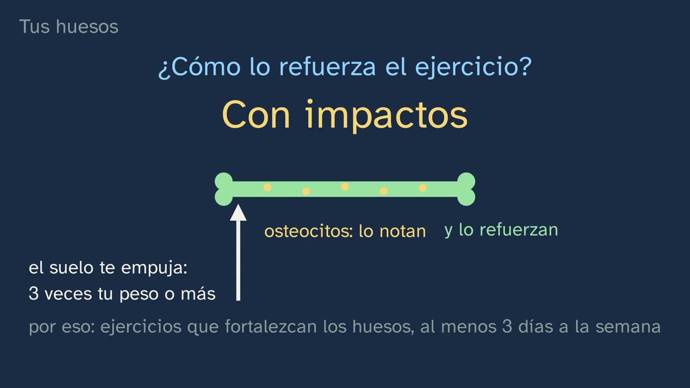
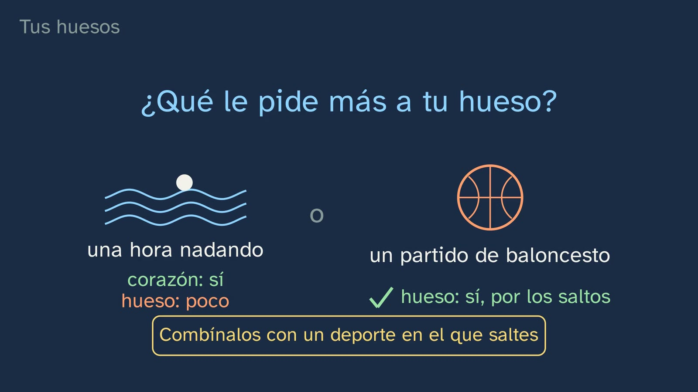
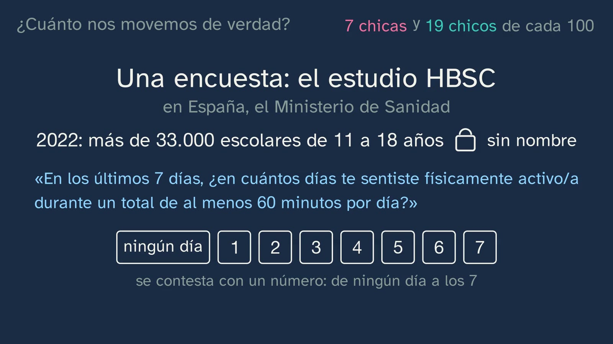
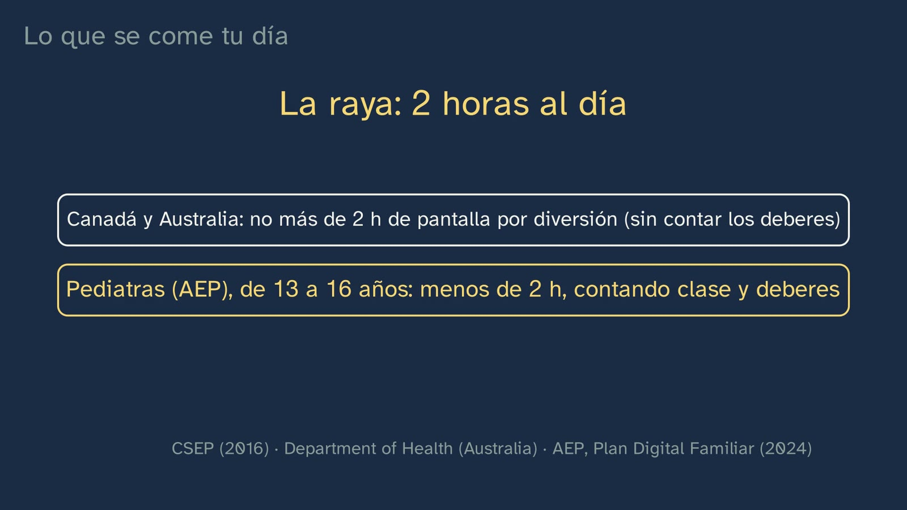
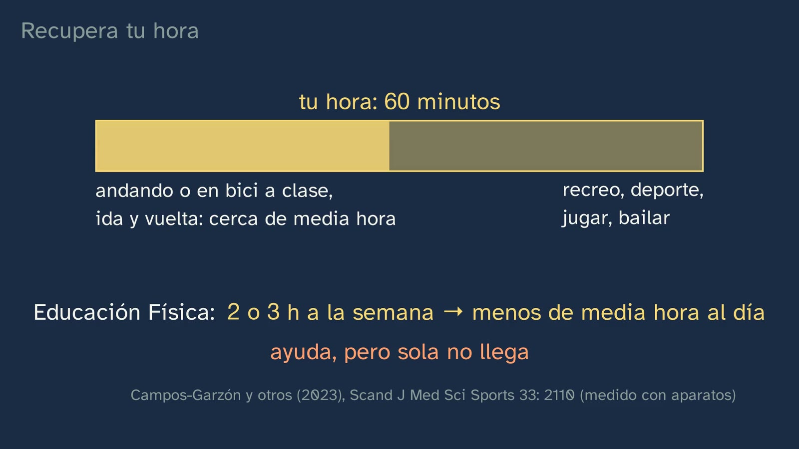

¿Cuánto nos movemos?
En pocas palabras
Es la primera clase de Educación Física del canal y abre el tema «Tu cuerpo, tu laboratorio». Tiene un mensaje claro: una hora al día es el mínimo, no la meta, porque tu cuerpo se construye según lo que le pides. Isidora empieza con una apuesta: de cada cien chicas de 17 y 18 años que estudian en España, ¿cuántas dicen moverse al menos una hora todos los días? Siete; de los chicos, unos diecinueve (estudio HBSC 2022, Ministerio de Sanidad). ¿Son muchos o pocos? Lo decide algo que traen de la ESO: la actividad diaria tiene una «tasa mínima». La OMS (2020) la da para 5 a 17 años como una media de al menos 60 minutos al día de actividad moderada o vigorosa, y lo resume así: cuanta más, mejor. Añade tres días por semana de actividad vigorosa y de fuerza, y limitar el tiempo sentado, sobre todo con pantallas por diversión. Cuenta todo lo que mueva así, y para saberlo sin aparatos está la prueba del habla. Después llega el porqué, en cuatro sitios del cuerpo. El hueso: en los cuatro años que rodean el estirón se forma casi el 40 % del mineral del esqueleto adulto, y lo refuerzan los impactos; por eso el baloncesto le pide más que nadar o ir en bici, que son estupendos para el corazón. El corazón, un músculo que se entrena: echa más sangre en cada latido y, en reposo, suele latir más despacio. El músculo, que saca la mayor parte del azúcar de la sangre y, al moverse, le abre la puerta sin necesitar la insulina. La cabeza: los programas de ejercicio reducen algo los síntomas de depresión, sin sustituir a pedir ayuda. Y lo que no se usa, se pierde: en un experimento clásico (1966), tres semanas en cama hicieron caer la capacidad aeróbica de cinco hombres de veinte años más que los treinta años de envejecer que vinieron después; ocho semanas de entrenamiento se la devolvieron con creces. La segunda mitad responde a ¿cuánto nos movemos de verdad? La encuesta HBSC tiene su pregunta literal y dos límites: cuenta los días con la hora entera y recoge lo que cada uno dice. Aun así, sus diferencias valen, porque se repiten cuando se mide con aparatos. Con la edad, menos, y las chicas, en proporción, mucho menos: de 3 chicos por cada 2 chicas a los 11-12 años a 5 por cada 2 a los 17-18. En el mundo, 8 de cada 10 escolares no decían llegar a la hora todos los días (2016). ¿Por qué las chicas? El hecho va en una columna y las explicaciones, que son hipótesis, en otra. Luego, lo que se come tu día: los alumnos de 14 a 18 años dicen pasar unas cinco horas al día en internet por diversión entre semana (ESTUDES 2025), frente a una hora de moverse. El día tiene 24 horas. La OMS pide con firmeza limitar el tiempo sentado, sin poner cifra, y otros sí ponen la raya en dos horas: Canadá y Australia, de pantalla por diversión; la Asociación Española de Pediatría, de 13 a 16 años, contando también clase y deberes. El sueño se queda corto: a los 17 y 18 años, sólo 23 de cada 100 dicen dormir ocho horas o más entre semana, y tener el móvil en la habitación se asocia a dormir menos. El error típico: quien entrena una hora y pasa el resto del día sentado es activo y, a la vez, sedentario, porque son dos cuentas distintas. Cierra dónde encontrar tu hora: andando o en bici a clase (cerca de media hora en un día de clase), en el recreo, con el deporte, y quitándosela a las pantallas; la clase de Educación Física, sola, no llega. El último ejercicio es el registro de una semana propia: minutos, internet y sueño.
Objetivo. Al terminar, el alumnado sabrá comparar cuánto nos movemos de verdad con lo que su cuerpo necesita (una media de una hora al día como mínimo, y por qué) y dónde encontrar su hora frente a las pantallas.
Currículo
Real Decreto 243/2022, Educación Física, materia común de 1.º de Bachillerato. Citas comprobadas el 06/10/2026 en el PDF original (BOE n.º 82, de 6 de abril de 2022) y en el texto consolidado del BOE (última actualización publicada el 02/07/2026): coinciden.
| Elemento | Qué dice el decreto | Dónde se trabaja |
|---|---|---|
| Saber básico (bloque A, «Vida activa y saludable», salud social) | «Hábitos sociales y sus efectos en la condición física y la salud.» (p. 46168) | Tres hábitos: cuánto nos movemos (6:41–9:20), cuánto rato pasamos con pantallas y sentados (9:20–12:27) y cuánto dormimos (10:47). Sus efectos, en el cuerpo: el hueso, el corazón, el músculo y la cabeza (2:58–6:35). El tabaco y el alcohol tienen su clase en el tema 4 |
| Saber básico, en el mismo apartado (de pasada) | «Prácticas de actividad física con efectos positivos sobre la salud personal y colectiva: la práctica de la bicicleta como medio de transporte habitual.» (p. 46168) | Ir andando o en bici a clase cuenta (2:07) y, ida y vuelta, puede sumar cerca de media hora (12:27). Se desarrolla en el tema 9, «A clase en bici» |
| Competencia específica 1 | «Interiorizar el desarrollo de un estilo de vida activo y saludable, planificando responsable y conscientemente su actividad física a partir de la autoevaluación personal en base a parámetros científicos y evaluables, para satisfacer sus demandas de ocio activo y de bienestar personal, así como conocer posibles salidas profesionales asociadas a la actividad física.» (p. 46163) | Los «parámetros científicos y evaluables»: una recomendación con su porqué en el cuerpo, una encuesta con sus límites y la prueba del habla como medida propia. La «autoevaluación personal», en el ejercicio 3: tu semana, apuntada y comparada |
| Descripción de la CE1 | Puede abordarse desde «los estilos de vida saludables (alimentación saludable, no consumo de alcohol, tabaco y otras drogas, actividad física y reducción del sedentarismo, descanso, uso apropiado de las nuevas tecnologías, buen trato)», y «El buen uso de la tecnología debe ser un aliado desde un punto de vista transdisciplinar en nuestra área, especialmente en esta competencia, en la lucha contra el sedentarismo y las llamadas enfermedades hipocinéticas ocasionadas, en gran medida, por el aumento del tiempo de exposición a las pantallas.» (las dos, p. 46164) | La clase va en esa línea. «Actividad física y reducción del sedentarismo»: las dos cuentas (11:20) y recortar lo que te roba horas (12:56). «Descanso»: el sueño (10:47). «Uso apropiado de las nuevas tecnologías»: las cinco horas de internet por diversión, la raya de las dos horas y el móvil fuera del dormitorio (9:20–11:20). La idea de la segunda frase es la de 10:02: cada hora sentado delante de una pantalla es una hora que no pasas moviéndote, ni durmiendo |
| Descriptor STEM2 (de la CE1) | «… utilizando herramientas e instrumentos adecuados, apreciando la importancia de la precisión y la veracidad y mostrando una actitud crítica acerca del alcance y limitaciones de los métodos empleados.» (p. 46069) | El alcance y los límites de una encuesta: su pregunta literal (7:00), lo que dice uno frente a lo que mide un aparato y por qué, aun así, valen sus comparaciones (7:17) |
| Criterio 1.1 | «Planificar, elaborar y poner en práctica de manera autónoma un programa personal de actividad física dirigido a la mejora o al mantenimiento de la salud, aplicando los diferentes sistemas de desarrollo de las capacidades físicas implicadas, según las necesidades e intereses individuales y respetando la propia realidad e identidad corporal, evaluando los resultados obtenidos.» (p. 46167) | El punto de partida: cuánto te mueves, cuánto rato pasas con pantallas y cuánto duermes (ejercicio 3), y dónde encontrar tu hora (12:27). El programa se hace en el tema 3 |
| Criterio 1.4 | «Actuar de forma crítica, comprometida y responsable ante los estereotipos sociales asociados al ámbito de lo corporal y los comportamientos que pongan en riesgo la salud, aplicando con autonomía e independencia criterios científicos de validez, fiabilidad y objetividad a la información recibida.» (p. 46167) | Los «criterios científicos […] a la información recibida»: cuánto fiarse de una encuesta (7:17), el hecho separado de las hipótesis (8:49), «internet por diversión» no es «pantalla» (error 6) y cada raya, con quien la pone (10:29). Los «comportamientos que pongan en riesgo la salud»: mucho rato sentado con pantallas y dormir poco. Los «estereotipos sociales», en la pregunta abierta (15:00) |
El decreto no nombra a la OMS ni da ninguna cifra de minutos. La recomendación de la OMS es la concreción del canal dentro de los «parámetros científicos y evaluables» de la CE1. Una comunidad lo pide por escrito: Galicia, en 1.º de Bachillerato, quiere que se trabaje «atendiendo a las recomendaciones sobre actividad física saludable y utilitaria de organismos internacionales, nacionales y autonómicos» (Decreto 157/2022, DOG n.º 183, p. 50728). España adoptó en 2022 las mismas recomendaciones que la OMS (Ministerio de Sanidad, 2022, p. 26), así que son a la vez la cifra internacional y la nacional.
El porqué del cuerpo, en el currículo. El saber habla de los hábitos «y sus efectos en la condición física y la salud»: esos efectos son la parte central de la clase. Son nuevos para el alumnado, porque el currículo estatal de Educación Física de la ESO no trata los efectos del ejercicio en el hueso, el corazón o la cabeza. Lo más cercano está en Biología y Geología de la ESO: la anatomía y la fisiología básicas del aparato circulatorio y «Los hábitos saludables: su importancia en la conservación de la salud física, mental y social (higiene del sueño, hábitos posturales, uso responsable de las nuevas tecnologías, actividad física, autorregulación emocional, cuidado y corresponsabilidad, etc.).» (RD 217/2022, p. 41612). En 1.º de Bachillerato, quien cursa Biología, Geología y Ciencias Ambientales lo amplía: su competencia 5 permite «profundizar en el estudio de la fisiología humana y así proponer y adoptar estilos de vida que contribuyan a mantener y mejorar la salud y la calidad de vida. Este aspecto es particularmente importante dada la tendencia al alza de los hábitos sedentarios» (RD 243/2022, p. 46098).
Lo que hay que traer. De la ESO (Real Decreto 217/2022, BOE n.º 76, de 30 de marzo de 2022), en 1.º y 2.º: «Salud física: tasa mínima de actividad física diaria y semanal.» (p. 41634), que la clase recupera en 1:10. La competencia 1 de Educación Física de la ESO ya dice lo mismo de las pantallas que la de Bachillerato: «en la lucha contra el sedentarismo y las llamadas enfermedades hipocinéticas ocasionadas, en gran medida, por el aumento del tiempo de exposición a las pantallas» (p. 41630). El bloque de 1.º y 2.º pide el «Análisis crítico de los estereotipos corporales, de género y competencia motriz» (p. 41634) y la «Reflexión sobre actitudes negativas hacia la actividad física derivadas de ideas preconcebidas, prejuicios, estereotipos o experiencias negativas.» (p. 41635): es el terreno de las hipótesis sobre las chicas. En 3.º y 4.º, el criterio 1.5 ya pide contrastar la información «en base a criterios científicos de validez, fiabilidad y objetividad» (p. 41636). Y Biología y Geología pide la «Diferenciación entre correlación y causalidad» (p. 41611). El decreto de la ESO no da la cifra de la hora: la clase supone que llegan con «una hora al día» y la pizarra lo dice (1:24: «tasa mínima», en el currículo de la ESO; la hora, de la OMS). Madrid sí la pone en 1.º de ESO: «Tasa mínima y recomendaciones de actividad física diaria y semanal» (Decreto 65/2022, BOCM n.º 176, p. 465). Las citas del decreto de la ESO, comprobadas el 06/10/2026 en el PDF del BOE.
Los libros. Sólo hay un libro LOMLOE de Educación Física de 1.º de Bachillerato (Teide, Pértiga, 2022), y en sus unidades 1 a 3, las que se pueden leer, no cita a la OMS ni da datos reales de cuánto se mueven los chicos y las chicas en España (contraste del 05/10/2026, sólo de contraste: nada de esta ficha sale de él). De 90 listas de libros de institutos revisadas, sólo dos piden libro para esta materia: el profesorado programa con su currículo y sus apuntes.
Cómo está construida la clase
Capítulos del vídeo
Quince minutos y medio, en diez capítulos. Es una clase de teoría con mensaje: Isidora, en el pabellón, y la pizarra. Sigue el modelo del departamento (bases formativas del canal): el cuerpo como laboratorio, que se mide con criterio, y la teoría en vídeo para que el gimnasio quede para moverse. Cada recomendación llega con su porqué en el cuerpo, y el tiempo con pantallas, con las cifras de quien las pone. Es la primera de las cuatro clases del tema; las siguientes son el pulso (laboratorio), las pruebas de condición física y los aparatos que nos miden.
| Capítulo | Qué pasa | Por qué así |
|---|---|---|
| Qué vamos a ver | Isidora se presenta. El mapa del tema, con sus cuatro contenidos y el de hoy resaltado. El gancho, a cámara (0:33): «¿Te mueves lo suficiente?». La apuesta (0:39, pausa): siete chicas y unos diecinueve chicos de cada cien, con cien puntitos para cada grupo (0:58). «¿Son muchos o pocos?»: lo que traen de la ESO, ¿la hora es lo ideal o lo mínimo? (1:10, pausa). Lo mínimo: una hora es el mínimo, no la meta (1:24). | Predecir antes de ver y recuperar lo que traen. La pregunta de la ESO convierte el recuperar en el mensaje: la hora es un suelo, y sólo siete de cada cien chicas dicen llegar a él todos los días. |
| Una hora: el mínimo | La recomendación de la OMS para 5 a 17 años, escrita al decirse: «al menos», el suelo, no el techo; «cuanta más, mejor»; una hora de las 24 de tu día (1:41). Qué cuenta (jugar, deporte, ir andando o en bici, la clase de Educación Física) y la prueba del habla (2:07). Las otras dos: tres días de actividad vigorosa y de fuerza, y limitar el tiempo sentado con pantallas por diversión (2:37). | Lo exacto, con su fuente, y una herramienta de medida sin aparatos. Las dos últimas recomendaciones prometen su porqué en el cuerpo, y la clase lo cumple. |
| Lo que pasa en tu cuerpo | Por qué una hora: muchos beneficios aparecen con una media de una hora al día, y aparecen porque tu cuerpo se construye según lo que le pides (2:58). El hueso: la ventana del estirón (3:24) y los impactos, con los osteocitos (4:01). Para y piensa: ¿nadar o baloncesto? (4:30, pausa). El baloncesto, por los saltos; nadar y la bici, al corazón sí y al hueso poco (4:42). El corazón (4:59), el músculo y sus puertas para la glucosa (5:29), la cabeza (5:58) y las tres semanas en cama (6:13). Isidora, a mitad: la idea de la clase (6:35). | El mensaje, con un mecanismo que un alumno de 16 años puede contar con sus palabras. «Lo que no se usa, se pierde» se enseña con un experimento, y la recuperación de sus protagonistas devuelve el control al alumno. |
| ¿Cuánto nos movemos de verdad? | Volvemos a las cifras del principio, siete chicas y diecinueve chicos de cada cien: el estudio HBSC, anónimo, y su pregunta literal (6:41). Dos avisos: cuenta los días con la hora entera, más exigente que la media de la OMS, y es lo que cada uno dice; en unos trescientos escolares españoles, otro cuestionario daba unos 11 minutos al día más que un aparato en la muñeca. El siete no es una medida exacta, pero las diferencias se repiten cuando se mide con aparatos (7:17). | La pregunta del canal, «¿cómo lo sabemos?», aplicada a una cifra de salud: el criterio 1.4 y el descriptor STEM2. El bloque acaba en qué hacer con la cifra: fiarse de las comparaciones que confirman los aparatos. |
| Con la edad, menos | La escalera de la edad: 31 chicos y 21 chicas de cada cien a los 11-12 años; 19 y 7 a los 17-18 (7:54). Las dos líneas bajan, y la de las chicas cae mucho más, en proporción: de 3 chicos por cada 2 chicas a 5 por cada 2 (8:13). En el mundo, en 2016, 8 de cada 10 escolares de 11 a 17 años no decían llegar a la hora todos los días, y en casi todos los países las chicas se movían menos (8:31). | Se compara con la misma pregunta, hecha igual a todos. Se dice «en proporción» porque en puntos la distancia apenas cambia (pregunta 8 de la hoja). |
| ¿Por qué se mueven menos las chicas? | Dos columnas: el hecho (en casi todos los países, y también medido con aparatos) y las explicaciones, que son hipótesis: menos apoyo de familia y colegio, sentirse menos capaces en Educación Física y la falta de tiempo que nombran ellas. Que dos cosas vayan juntas no prueba que una cause la otra (8:49). | El artículo 10 de la Constitución del canal: hechos e interpretaciones, separados. Y una herramienta que vale para todo, que vuelve en el sueño (11:04). |
| Lo que se come tu día | ¿Cuántas horas de internet por diversión? (9:20, pausa). Unas cinco entre semana y casi siete el fin de semana, lo que dicen los alumnos de 14 a 18 años en ESTUDES 2025, frente a una hora de moverse (9:41). El día tiene 24 horas; la OMS pide con firmeza limitar el tiempo sentado y avisa de que demasiado sedentarismo puede ser malsano, sin poner cifra (10:02). La raya de las dos horas: Canadá y Australia, de pantalla por diversión y sin contar los deberes; la Asociación Española de Pediatría, de 13 a 16 años, contando clase y deberes (10:29). El sueño: de 8 a 10 horas a tu edad; 23 de cada 100 de 17 y 18 años dicen dormir 8 o más entre semana: las chicas, 20, y los chicos, 27; el móvil en la habitación se asocia a dormir menos; fuera del dormitorio, y pantallas apagadas una o dos horas antes (10:47). | Las pantallas, con su cifra y su letra pequeña: lo que dicen los alumnos, quién pone la raya y dónde. El día de 24 horas ata en una sola cuenta moverse, pantallas y sueño. |
| Activo y sedentario a la vez | Una idea que parece lógica: alguien entrena una hora cada tarde y el resto del día lo pasa sentado. ¿Es sedentario? (11:20, pausa). Sí, y también activo: inactividad y sedentarismo son dos cosas, con dos definiciones y una cuadrícula de dos ejes (11:43). No todo rato sentado es igual: estudiar o leer van con mejores notas; el que más se asocia a peor salud es el de pantallas por diversión (12:14). | El error, planteado como una idea razonable y desmontado con definiciones. La matización final evita que estudiar sentado se oiga tan malo como el móvil. |
| Recupera tu hora | Dónde encontrarla: andando o en bici a clase, ida y vuelta, cerca de media hora en un día de clase; el recreo, el deporte, jugar, bailar; la clase de Educación Física, sola, no llega (12:27). Y recortar lo que te la roba: cambiar una de esas cinco horas de internet por moverte, levantarse tras un par de horas de pantalla, el móvil fuera del dormitorio, y algo que te guste, a tu ritmo (12:56). | El mensaje acaba en acción, con números de la propia clase. Cada consejo tiene detrás a quien lo da. |
| Para practicar y seguir pensando | El resumen en seis líneas (13:27). Tres ejercicios (14:14; la pausa, en 14:57): la semana de Lucía, la comba frente a nadar y el registro de tu semana. La pregunta abierta (15:00). La próxima clase, el pulso (15:18). Isidora se despide: «tu cuerpo se construye según lo que le pides» (15:38). | Práctica con un ejemplo inventado, una explicación con palabras propias y la autoevaluación que pide la CE1. Las soluciones abren la clase 2. |
Puentes con otras materias. Matemáticas: una media no es un mínimo. Si todos los días llegas a 60, la media llega a 60; al revés, no (la semana de Lucía). Y la diferencia entre restar y dividir, que decide si la distancia entre chicos y chicas «crece». Matemáticas I, Matemáticas Aplicadas a las Ciencias Sociales I y Matemáticas Generales piden en 1.º la «Diferencia entre correlación y causalidad.» (RD 243/2022, pp. 46341, 46354 y 46366): el capítulo de las chicas y el del móvil en la habitación son casos reales. Física y Química (modalidad de Ciencias): «el suelo te empuja con al menos tres veces tu peso» es la tercera ley de Newton con números, y por qué un salto empuja tanto se explica con el impulso: frenar la caída en muy poco tiempo pide una fuerza grande. El saber está en 1.º: «Interpretación de las leyes de la dinámica en términos de magnitudes como el momento lineal y el impulso mecánico: aplicaciones en el mundo real», con aplicaciones «como la ingeniería o el deporte» (RD 243/2022, p. 46198; comprobado el 06/10/2026). Biología, Geología y Ciencias Ambientales: la fisiología del hueso, del corazón y del músculo, y la insulina. Filosofía: qué es un hecho y qué es una hipótesis.

Plan de una sesión de 50 minutos
Pensado para verlo en clase con proyector y salir después a un espacio donde se pueda caminar (patio, pabellón o un pasillo amplio). Si el vídeo se ve en casa, como clase invertida, la sesión puede ser entera en el pabellón: la actividad, la «otra opción» y la corrección de la semana de Lucía.
| Minutos | Qué se hace |
|---|---|
| 0–3 | Sin vídeo. «Antes de empezar», en la hoja: la semana pasada, cuántos días se movieron una hora, cuántas horas pasan en internet por diversión un día de clase y cuántas horas suelen dormir entre semana. Cada cual lo escribe para sí; no se comenta en voz alta. |
| 3–8 | Vídeo de 0:00 a 2:58. Parar en 0:52 (la apuesta: cada cual apunta sus dos números en la pregunta 1) y en 1:20 (¿lo ideal o lo mínimo?: a mano alzada). |
| 8–15 | Vídeo de 2:58 a 6:41. Parar en 4:37 (¿nadar o baloncesto?: a mano alzada, con una razón). Al acabar el tramo, las preguntas 3 a 6 de la hoja, en parejas (3 minutos). |
| 15–22 | Vídeo de 6:41 a 9:20. Parar en 7:54, tras los dos avisos: la pregunta 7, en un minuto. Al acabar el tramo, «¿Hecho o explicación?», en parejas (3 minutos). |
| 22–28 | Vídeo de 9:20 a 12:27. Parar en 9:37 (¿cuántas horas de internet?: cada cual escribe un número antes de oír la respuesta) y en 11:37 (¿es sedentario?: sí, no o depende, a mano alzada). |
| 28–32 | Vídeo de 12:27 al final (15:44). Los ejercicios, para casa; el registro del 3 empieza hoy mismo. |
| 32–47 | La actividad: la prueba del habla y, si da tiempo, «¿Lo nota tu hueso?». |
| 47–50 | De vuelta, la segunda pregunta de «Antes de empezar», también para sí. |
Errores típicos y cómo se tratan
Con una advertencia honesta: ninguno está medido con alumnado español de Bachillerato. Son los que preveían la ficha del tema y la revisión del guion, y los que se ven escritos en documentos públicos (el 8, por ejemplo). Nadie, que sepamos, ha medido cuánto circulan entre el alumnado.
- «Con una hora al día ya está»: la hora como meta. La OMS dice «al menos» una media de 60 minutos (2020, p. 3) y lo resume así: «cuanta más, mejor» (De un vistazo, p. 1). Los autores de las directrices añaden que pasar de 60 minutos «provide additional health benefits» (Bull y otros, 2020). La clase lo dice en 1:24 («el mínimo, no la meta») y en 1:41. Para quien pregunte «¿cuánto más?», la respuesta honesta: a esta edad casi ningún estudio ha medido dónde deja de sumar (OMS 2020, p. 27: «very few studies have addressed the issue of dose-response»), y «más» tiene límites, porque con más intensidad sube el riesgo de lesión (p. 27). El error contrario también existe: «si no llego a la hora, no sirve de nada». Para quien está lejos, la recomendación es subir poco a poco: «Cuando una persona no alcanza las recomendaciones, se recomienda aumentar poco a poco su nivel de actividad» (Ministerio de Sanidad, infografía de 5 a 17 años, 2023).
- «Nadar fortalece los huesos». Los nadadores tienen una densidad ósea parecida a la de quien no hace deporte: «Most of the studies included in this review showed similar bone mineral density values in swimmers and sedentary controls», por «the hypogravity and lack of impact characteristic of this sport» (Gómez-Bruton y otros, 2013). Con la bici de carretera pasa algo parecido: «road cycling does not appear to confer any significant osteogenic benefit» (Olmedillas y otros, 2012, sobre todo ciclistas adultos). Al hueso le sirven las cargas rápidas y fuertes; «static loads and repetitive low-magnitude loads are not osteogenic» (Weaver y otros, 2016). La clase lo dice en 4:42 sin pasarse al otro lado: nadar no es malo para el hueso («Swimming does not seem to negatively affect bone mass», Gómez-Bruton), y para el corazón es estupendo. La pizarra dice «poco», no «malo». Otro error vecino: «si hago deporte, no me romperé un hueso». Los niños más activos se fracturan más, porque se caen más (Weaver y otros, 2016).
- «El ejercicio te hace más listo» o «adelgaza». Son las dos exageraciones más habituales, y la clase no las dice. Para los 14 a 18 años, el comité científico de EE. UU. no encuentra pruebas suficientes de que moverse mejore el rendimiento intelectual («Insufficient evidence», PAGAC 2018, p. F3-5), y una revisión centrada en adolescentes lo llama «equivocal» (Li y otros, 2017). Lo que sí está probado es un efecto pequeño y pasajero después de una sesión, más claro en niños que a esta edad (PAGAC, p. F3-5). La OMS da el beneficio cognitivo con certeza moderada para todo el grupo de 5 a 17 años, pero sus pruebas son sobre todo de niños. Con la grasa, la OMS da certeza baja: los ensayos de ejercicio dan resultados desiguales (2020, pp. 26 y 27); lo que se ve con más fuerza es que los más activos ganan menos grasa con los años (PAGAC, p. F7-7). Y dos más que pueden salir con el sueño y el ánimo: a los 16, que moverse quite la ansiedad o haga dormir mejor no está demostrado (pruebas insuficientes en jóvenes: PAGAC, pp. F3-26 y F3-37). Por eso la clase se queda en el hueso, el corazón, el músculo y la depresión, que sí tienen pruebas a esta edad.
- Confundir inactividad y sedentarismo. «Si cumplo mi hora, ya no soy sedentario», o al revés, «si paso mucho rato sentado, soy inactivo». Inactividad es «An insufficient physical activity level to meet present physical activity recommendations» (OMS 2020, glosario, p. vii; Tremblay y otros, 2017), y sedentarismo, el tiempo despierto, sentado, reclinado o tumbado, con un gasto de 1,5 MET o menos (las mismas fuentes; Ministerio de Sanidad, 2022, p. 8). El Ministerio lo dice así: «No debemos confundir sedentarismo con inactividad física», y una persona que cumple las recomendaciones puede ser sedentaria «porque pase mucho tiempo seguido sentada» (2022, p. 6). La clase lo desmonta en 11:20–12:27. Dos cuidados para no pasarse al otro lado. Uno: son dos recomendaciones, no que el tiempo sentado anule la hora de actividad; y no todo rato sentado es igual: leer o hacer deberes va con mejores resultados escolares, y la asociación con peor salud es más fuerte con las pantallas de ocio que con el tiempo sentado total (OMS 2020, pp. 30–31; la clase lo dice en 12:14). Dos: usar silla de ruedas no es, por sí mismo, ser sedentario, porque se puede ser activo sentado (OMS 2020, p. 64; ver «Notas»).
- Leer la cifra de la encuesta como una medida. El 7 % de las chicas y el 19 % de los chicos son lo que dicen los chicos y chicas de 17 y 18 años que siguen estudiando, con una pregunta que cuenta días y no minutos (7:00). Tiene dos límites. Uno: cuenta los días con la hora entera, y eso es más exigente que la media de la OMS. Toda semana que llega a 60 todos los días llega a la media, pero no al revés: Lucía tiene una media de 62,1 minutos y sólo cuatro días de 60 o más. Es la regla que la OMS usaba en 2010 («cada día»); en 2020 pasó a «una media» porque los estudios usaban medias (OMS 2020, p. 27), y las encuestas siguen contando la antigua para poder compararse con años anteriores (HBSC internacional, vol. 4, p. 1). Este límite empuja la cifra hacia abajo. Dos: es lo que cada uno dice. En el estudio de Schröder y otros (2021), con escolares españoles de 8 a 16 años, otro cuestionario daba 106,5 minutos al día de actividad moderada o vigorosa y el acelerómetro, 95,2 (7:28). Este límite probablemente empuja hacia arriba, aunque no es seguro: aquel cuestionario es otro, que mide minutos, y lo que uno cuenta puede fallar en los dos sentidos (Guthold y otros, 2020, «Discussion»). Por eso la clase no corrige el siete hacia ningún lado y se queda con lo que sí aguanta: las diferencias entre chicos y chicas y con la edad se repiten con aparatos (7:45). En la base de datos internacional ICAD, con acelerómetros de 27.637 jóvenes de diez países, «Boys were less sedentary and more active than girls at all ages» (Cooper y otros, 2015). Y cada pregunta da su número: en el mismo HBSC, la actividad vigorosa cuatro o más veces por semana en el tiempo libre la dicen el 48,3 % de los chicos y el 24,2 % de las chicas (resumen, p. 3). Ninguna cifra es «la verdadera»: miden cosas distintas.
- «Pasan cinco horas al día mirando la pantalla». La pregunta de ESTUDES es otra: «¿CUÁNTAS HORAS DE MEDIA DEDICAS A INTERNET POR DIVERSIÓN (chateando, mandando o recibiendo e-mails, whatsApps, usando redes sociales, jugando con o sin dinero, escuchando o descargándote música, viendo o descargándote videos…) EN UN DÍA?» (cuestionario ESTUDES 2025, p. 28). Incluye escuchar música, no pregunta por lo que no va por internet (la tele de siempre, por ejemplo), es lo que dice cada alumno en un cuestionario en papel, y nadie en España lo ha medido con aparatos a esta edad. La clase lo dice bien: «internet por diversión», «lo que dicen» (9:41). Las rayas de las dos horas, en cambio, hablan de pantallas: de ocio en Canadá y Australia, y de todas, también las de clase, en la AEP. Para el ejercicio 3 vale cualquiera de las dos cuentas (el vídeo dice «pantalla por diversión»; la hoja, «internet por diversión»), siempre que se diga cuál.
- Tomar una correlación por causa. Es el error que la clase desmonta en 8:49: que la menor actividad de las chicas vaya junto a menos apoyo o a sentirse menos capaces no prueba que eso la cause. Telford y otros (2016) lo vieron en escolares australianos de 8 a 12 años; la revisión de Duffey y otros (2021) recoge las barreras que nombran las chicas, sin compararlas con los chicos. El segundo caso de la clase es el móvil en la habitación (11:04): los 20 estudios del metaanálisis de Carter y otros (2016) son transversales, así que se sabe que va junto a dormir menos, no que lo cause. La voz lo dice bien («se asocia»); la pizarra, más corto («se duerme menos»). Una buena pregunta para el alumnado: ¿qué haría falta para probar que una cosa causa la otra? Hay un intento real: en Suiza se pidió a unos adolescentes dejar las pantallas desde las 21:00 en los días de clase, durante dos semanas, y quienes más las redujeron se durmieron antes y durmieron más (Perrault y otros, 2019). Pero no tenía grupo de control: buen ejercicio para buscarle los fallos.
- «La OMS dice que, como mucho, dos horas de pantalla al día». No lo dice: ni la OMS de 2020 ni la actualización española de 2022 ponen cifra («There is insufficient evidence to specify time limits on sedentary behaviour», OMS 2020, p. 31; Ministerio de Sanidad, 2022, p. 26). La clase lo dice en 10:19 y atribuye la raya a quien la pone (10:29). El error circula en documentos públicos: el informe PASOS 2019 escribe que «La OMS recomienda un uso máximo de pantallas de 120 minutos diarios» (p. 43), y el Plan Estratégico Nacional para la Reducción de la Obesidad Infantil 2022-2030 define el sedentarismo como más de dos horas de pantallas al día «de acuerdo con la recomendación de la OMS». Las dos horas son de Canadá (2016), Australia (2019), el Ministerio de Sanidad en 2015 (ya sustituida) y la AEP (2024): ver «Notas».
- «La prueba del habla es la definición de la OMS». Es una regla práctica que usan los CDC de Estados Unidos, el NHS británico y el Ministerio de Sanidad (2022, p. 8). La OMS define la intensidad en MET (moderada, de 3 a menos de 6; vigorosa, 6 o más) y en una escala de 0 a 10 relativa a la capacidad de cada cual (glosario, p. vii). La clase la presenta como una forma de saberlo (2:21), sin atribuírsela a la OMS.

Preguntas y soluciones
Para y piensa (dentro del vídeo)
- La apuesta (0:39; la pausa, en 0:52). Siete chicas y unos diecinueve chicos de cada cien (7,2 % y 18,6 %; HBSC 2022, informe técnico, p. 33). No hay apuesta mala: lo que interesa es si se quedan por encima o por debajo, y por qué. Conviene guardarlas: en 6:41 sabrán que esas cifras son «lo que dicen», contando los días con la hora entera.
- La hora diaria que se recomienda a tu edad, ¿es lo ideal o es lo mínimo? (1:10; la pausa, en 1:20). Lo mínimo (1:24). La ESO habla de «tasa mínima» y la OMS dice «al menos». Quien conteste «lo ideal» tiene la idea más extendida, y es justo el mensaje que la clase quiere cambiar (error 1).
- ¿Qué le pide más a tu hueso, una hora nadando o un partido de baloncesto? (4:30; la pausa, en 4:37). El baloncesto, por los saltos (4:42). El baloncesto es uno de los ejemplos de actividad con impactos de al menos tres veces el peso del cuerpo («volleyball, basketball, martial arts, and gymnastics», PAGAC 2018, p. F7-12); en el agua no hay impactos. Las mejores respuestas dicen por qué, y no dicen que nadar sea malo.
- ¿Cuántas horas crees que pasan en internet por diversión los chicos y chicas de tu edad? (9:20; la pausa, en 9:37). Unas cinco entre semana (5,1) y casi siete el fin de semana (6,7), según lo que dicen los alumnos de 14 a 18 años en ESTUDES 2025 (OEDA, 2026, p. 61, tabla 52). Por edad, entre semana: 5,3 horas a los 16, 5,4 a los 17 y 5,2 a los 18. Merece la pena comparar la apuesta de cada cual con su propia respuesta de «Antes de empezar», sin decirla en voz alta.
- ¿Es sedentario? (11:20; la pausa, en 11:37). Es la pregunta 11 de la hoja: solución abajo.

De la hoja del alumnado
Antes de empezar. No hay respuesta correcta: es su punto de partida, y es suyo. La segunda pregunta, al final de la clase, la responden también para sí. Una buena revisión, inventada: «Puse "tres días", "unas cuatro horas" de internet y "siete horas" de sueño. Tres días no me dicen si llego a la media: tengo que apuntar los minutos. Cuatro horas entre semana son menos que las cinco que dicen los de mi edad, pero el doble de la raya de dos. Duermo menos de las ocho que hacen falta. Y entreno martes y jueves, pero paso la tarde sentado: soy activo y sedentario a la vez». Lo que se valora es que usen las cifras y las palabras de la clase, no cuánto se mueven.
Mientras ves el vídeo.
- Tu apuesta. Siete chicas y unos diecinueve chicos de cada cien (0:58).
- ¿Lo ideal o lo mínimo? Lo mínimo. «Al menos» quiere decir que 60 minutos de media es el suelo, no el techo: más actividad, mejor, según la propia OMS (1:24–1:58).
- El hueso. Es una ventana porque en los cuatro años que rodean el estirón se forma casi el 40 % del mineral que tendrá el esqueleto adulto; la mayor ganancia llega, de media, hacia los 12-13 años en las chicas y hacia los 14 en los chicos, así que a los 16, de media, a las chicas casi se les ha cerrado y a los chicos todavía no (3:24). Pero el hueso sigue ganando hasta pasados los 20, y moverse todavía le suma. Lo refuerzan los impactos: al saltar, correr o frenar, el hueso se deforma un poco; unas células de dentro, los osteocitos, lo notan y mandan reforzarlo (4:01). Una respuesta completa lo ata a la idea de la clase: el hueso se construye según lo que le pides. Nota para el profesorado: este mecanismo se conoce «primarily from animal studies» (Weaver y otros, 2016), y las edades son medias de una cohorte canadiense.
- El corazón. Se puede entrenar porque es un músculo. Entrenado (corriendo o nadando con regularidad), se agranda un poco por dentro, echa más sangre en cada latido y, en reposo, suele latir más despacio (4:59). En chicos adolescentes se ha visto en unas diez semanas, y en niños, que se pierde si se deja. Nota: por qué baja el pulso en reposo se discute todavía (Reimers y otros, 2018); no conviene pedirlo. Se mide en la clase 2.
- El músculo y la cabeza. El músculo es el que más azúcar saca de la sangre: después de comer, la mayor parte de la glucosa entra en él. Normalmente le abre la puerta la insulina; al moverse, el músculo la abre solo, y con entrenamiento gana más puertas. Por eso moverse ayuda a que la insulina funcione mejor (5:29). La cabeza: moverse protege contra la depresión y los programas de ejercicio reducen algo sus síntomas, también en adolescentes; es una ayuda, pero no sustituye a pedirla cuando uno está mal (5:58).
- Tres semanas en cama. En 1966, la capacidad aeróbica de cinco hombres de 20 años cayó más en tres semanas en cama que en los treinta años de envejecer que vinieron después; con ocho semanas de entrenamiento la recuperaron, y con creces (6:13). Nota: cayó de 3,3 a 2,4 litros de oxígeno por minuto (un 27 % menos), subió a 3,9 tras el entrenamiento (un 18 % por encima de la de partida), y treinta años después estaba un 11 % por debajo de la de partida (2,9) (McGuire y otros, 2001; Mitchell y otros, 2019; cálculos ejecutados). Eran cinco hombres: vale como ejemplo, no como ley.
- ¿Por qué la encuesta no es una medida exacta? Uno: cuenta los días en que se llega a la hora entera, que es más exigente que la media de la OMS (un día flojo no lo compensa otro más largo). Dos: es lo que cada uno dice de sí mismo; en un estudio con unos trescientos escolares españoles, otro cuestionario daba de media unos 11 minutos al día más que un aparato en la muñeca (7:17). Aun así, podemos fiarnos de las diferencias entre chicos y chicas y con la edad porque se repiten cuando se mide con aparatos (7:45). Nota: hacia dónde empuja cada límite, en el error 5.
- «En proporción». Porque en puntos la distancia casi no cambia (de unos 10 a unos 11 puntos entre los extremos), pero en proporción sí: a los 11-12 años, por cada 2 chicas hay 3 chicos; a los 17-18, 5. Las chicas pierden casi dos tercios (del 20,5 al 7,2 %) y los chicos, menos de la mitad (del 30,8 al 18,6 %) (8:13). Nota: la proporción tiene su máximo a los 15-16 años (5,8 chicos por cada 2 chicas) y a los 17-18 baja un poco; la voz sólo compara los extremos.
- Internet por diversión. Unas cinco horas al día entre semana y casi siete el fin de semana, según lo que dicen los alumnos de 14 a 18 años (ESTUDES 2025). Cuenta todo lo que se hace en internet por diversión: redes, vídeos, juegos y música (9:41). Canadá y Australia ponen la raya en no más de dos horas al día de pantalla por diversión, sin contar los deberes. La AEP pide, de 13 a 16 años, menos de dos horas al día contando incluso las de clase y deberes, así que es más estricta: cuenta todas las pantallas (10:29).
- El sueño. De 8 a 10 horas a esta edad (10:50). Tener el móvil en la habitación por la noche, aunque no se use, se asocia a dormir menos; por eso los pediatras aconsejan dejarlo fuera y apagar las pantallas una o dos horas antes de acostarse (11:04). La mejor respuesta dice «se asocia», no «te quita» (error 7).
- ¿Activo y sedentario a la vez? Sí. Inactividad es no llegar a la actividad recomendada; sedentarismo, el tiempo que pasas sentado o tumbado, despierto, gastando muy poca energía. Son dos cuentas distintas: quien entrena una hora y pasa el resto del día sentado es activo y, a la vez, pasa muchas horas sedentario (11:43).
- ¿Dónde encontrar tu hora? Andando o en bici a clase (ida y vuelta, cerca de media hora en un día de clase), en el recreo, con el deporte, jugando, bailando, y quitándosela a las pantallas: de esas cinco horas de internet, cambiar una por moverse (12:27–12:59). La clase de Educación Física sola no llega porque son dos o tres horas a la semana: repartidas entre siete días, 120 / 7 = 17,1 o 180 / 7 = 25,7 minutos al día, menos de media hora (12:46; cálculo ejecutado).

La prueba del habla. Es una prueba de cada cual, y la respuesta depende de su ritmo y de su forma física: la OMS mide la intensidad «relative to an individual's personal capacity» en su escala de 0 a 10 (glosario, p. vii). Lo esperable, con las fuentes: pasear tranquilo, hablar y cantar sin esfuerzo: ligera (Ministerio de Sanidad, 2022, p. 8: «caminar a paso lento»). Caminar deprisa, hablar sí, cantar cuesta: moderada (Sanidad, «caminando a paso ligero (más de 6 km/h)»; CDC, «Walking briskly»). Subir unas escaleras a buen ritmo, no tiene respuesta única: para unos será moderada y para otros, vigorosa. Saltar a la comba, un minuto seguido, lo esperable es vigorosa: sólo unas pocas palabras sin parar a respirar. En la tabla del Ministerio de Sanidad para 6 a 18 años, «Saltar la cuerda» está entre las actividades vigorosas, igual que «Nadar» y «Baloncesto» (2022, p. 43, con datos del compendio de actividades para jóvenes de Butte y otros, 2018, que a los 16-18 años le da 7,4 METy a la comba y 8,6 a nadar a ritmo propio; comprobado el 06/10/2026). Quien dé saltitos suaves y pare a menudo puede quedarse en moderada. Ir en bici al instituto, depende de cómo: paseando, moderada; pedaleando rápido, vigorosa (Sanidad, p. 8: de 16 a 19 km/h, moderada; de 19 a 22 km/h, vigorosa). La actividad propia, la que diga su prueba. Criterios: hace la prueba de verdad (habla y canta mientras se mueve, no después), clasifica con las palabras de la clase y, para una nota alta, explica por qué la misma actividad no da lo mismo para todos. No se corrige el resultado de nadie: se corrige el método.
¿Lo nota tu hueso? Saltitos suaves: sí hay golpe al caer; el suelo te empuja de golpe, y ese tipo de carga, rápida y de impacto, es la que refuerza el hueso. El Ministerio de Sanidad define así las actividades de mejora de la masa ósea: «actividades, generalmente, de impacto con el suelo (impacto osteoarticular) que producen una fuerza mecánica de tracción o compresión sobre los huesos, que promueve el crecimiento y fortalecimiento de los mismos. Por ejemplo: correr o saltar.» (2022, p. 9; comprobado el 06/10/2026). De puntillas, despacio: no hay golpe. Trabaja el músculo de la pantorrilla, pero al hueso le pide poco: «static loads and repetitive low-magnitude loads are not osteogenic» (Weaver y otros, 2016). Nadar o ir en bici: no hay golpe, porque en el agua flotas y en la bici vas sentado. Criterios: distingue el golpe del esfuerzo (la puntilla cansa, pero no golpea) y lo explica con los impactos de la clase. Un cuidado al corregir: medio minuto de saltos no hace hueso; en los estudios que funcionaron, las intervenciones duraban unos seis meses (PAGAC 2018, p. F7-12).

¿Hecho o explicación?
- H. Lo dicen los datos: 7,2 % de las chicas frente a 18,6 % de los chicos (HBSC 2022, informe técnico, p. 33). Ojo: el hecho es lo que dicen, y la frase lo respeta.
- E. Es una explicación con «porque»: lo que se ha visto es que van juntas, no que una cause la otra (8:49).
- H. Es lo que contestan en ESTUDES 2025: 5,1 horas de media entre semana (OEDA, 2026, p. 61, tabla 52). El hecho es lo que dicen; que sea lo que de verdad pasan sería otra cosa (error 6).
- E. Es la trampa de la hoja. Lo que se ha visto es que quien tiene el móvil en la habitación suele dormir menos, en estudios transversales (Carter y otros, 2016); «te quita» afirma que es la causa. La voz de la clase lo dice bien: «se asocia a dormir menos» (11:04).
- H. Es lo que se midió en ese experimento (McGuire y otros, 2001; Mitchell y otros, 2019). Ojo: es un hecho de cinco hombres; decir que a todo el mundo le pasaría igual sería una generalización.
- H, con matiz. Que vayan juntas es lo que han observado los estudios (Telford y otros, 2016: las chicas daban un 9 % menos de «perceived competence in physical education»). Lo que sería explicación es decir que se mueven menos porque se sienten menos capaces, y la frase no lo dice. Vale E si se razona así; la mejor respuesta distingue «van juntas» (hecho) de «una causa la otra» (hipótesis).

Para practicar (las soluciones abren la clase 2)
- La semana de Lucía (inventada): lunes 20, martes 70, miércoles 45, jueves 90, viernes 30, sábado 120 y domingo 60 minutos. ¿Llega a la media de la OMS? ¿Qué contestaría a la pregunta de la encuesta? Suma 435 minutos; la media es 435 / 7 = 62,1 minutos al día: llega a la media de la OMS. A la encuesta contestaría «4 días»: martes, jueves, sábado y domingo. El domingo cuenta, porque la pregunta dice «al menos» 60, y 60 justos valen. Así que cumple la recomendación de hoy, pero en HBSC no contaría entre quienes se mueven a diario (cálculos ejecutados). Para nota: para llegar a 60 todos los días le faltarían 85 minutos (40 el lunes, 15 el miércoles y 30 el viernes), aunque ya llega a la media. Criterios: suma y divide entre siete, no entre los días que se movió; cuenta bien los días de 60 o más, con el de 60 justos; y contesta las dos preguntas por separado.
- Explica con tus palabras por qué saltar a la comba le pide más a tu hueso que nadar, y por qué a tu corazón le sirven los dos. El hueso: al saltar a la comba, cada vez que caes el suelo te empuja de golpe, y esos impactos deforman un poco el hueso; los osteocitos lo notan y mandan reforzarlo. En el agua flotas y no hay impactos, así que nadar apenas le pide nada al hueso. El corazón: los dos, hechos seguido durante varios minutos, mueven a ritmo grandes músculos y obligan al corazón a bombear más sangre; como es un músculo, se entrena con los dos. Un ejemplo de buena respuesta, inventado: «Cuando salto a la comba, cada vez que caigo el suelo me empuja y mi hueso se deforma un poquito; sus células lo notan y lo refuerzan. Nadando floto y no hay golpes, así que al hueso casi no le pide nada. Al corazón le sirven los dos, porque con los dos me acelero y respiro fuerte mucho rato, y el corazón, como es un músculo, se entrena». Las fuentes: la comba está entre los ejercicios que hacen hueso («brincar y saltar (incluyendo con una cuerda de saltar)», NIAMS, «La salud de los huesos de los niños», revisada en mayo de 2023; comprobado el 06/10/2026); el Ministerio de Sanidad define las actividades aeróbicas como las que «mejoran la función cardiorrespiratoria porque requieren que el cuerpo transporte oxígeno utilizando el corazón y los pulmones», aquellas en que «los grandes grupos musculares se mueven rítmicamente» durante varios minutos o más, con «nadar» entre sus ejemplos (2022, p. 8), y pone la comba y la natación entre las vigorosas (p. 43). Criterios: el hueso, con impactos (o «golpes al caer») y, para nota, con los osteocitos; nadar, sin impactos porque se flota; el corazón, con que los dos le hacen trabajar mucho rato y que es un músculo; y nada de «nadar es malo». Vale también una respuesta que añada que la comba suele ser más intensa que nadar suave, si se apoya en la prueba del habla.
- Durante una semana, apunta cada día tus minutos de actividad moderada o vigorosa, tus horas de internet por diversión y tus horas de sueño, y compáralos con lo que has visto hoy. Es abierta y personal: la solución es el método. Para los minutos, la suma de la semana dividida entre siete (la media de la OMS) y cuántos días llegaron a 60 (lo que contestaría en HBSC). Para internet y el sueño, además, la media de lunes a viernes, porque así preguntan ESTUDES y HBSC; y la comparación con las cifras de la clase: unas cinco horas de internet entre semana, la raya de dos, de 8 a 10 horas de sueño. Un ejemplo inventado, con sus cuentas ejecutadas: minutos 45, 70, 30, 75, 20, 90 y 0 suman 330, una media de 47,1: no llega a la media, le faltan 90 minutos a la semana, unos 13 al día; llegó a 60 tres días (martes, jueves y sábado). Internet: 4, 3, 5, 3, 4, 6 y 7 horas, una media de 3,8 de lunes a viernes: menos que las cinco que dicen los de su edad, pero casi el doble de la raya de dos. Sueño (la noche anterior): 7; 7; 6,5; 7; 7,5; 9 y 9, una media de 7 horas de lunes a viernes: por debajo de 8. Una conclusión de nota: «Si cambio una hora de internet por moverme dos días entre semana, llego a la media» (330 + 120 = 450 minutos, 450 / 7 = 64,3). Criterios: los siete días apuntados; la prueba del habla usada para decidir qué minutos cuentan; las cuentas bien hechas; las comparaciones con las cifras de la clase; y, para una nota alta, los límites del propio registro: es a la vez la encuesta y el aparato, apunta de memoria y quizá se olvide de lo que no parece ejercicio (ir andando, subir escaleras). Sus números son suyos: se corrige el método, nadie tiene que enseñar sus minutos, sus horas de internet ni las de sueño, y nunca se pone nota a cuánto se mueve nadie. Conviene que lo guarden: es el punto de partida del programa personal del tema 3 (criterio 1.1).

Para seguir pensando. ¿Por qué crees que, con la edad, las chicas que dicen moverse a diario caen, en proporción, mucho más que los chicos? ¿Y qué cambiarías tú para que no pasara? No tiene respuesta de libro, y ni el vídeo ni esta ficha dan la suya. Algunas pistas para el debate, sin cerrarlo:
- Mirar los datos antes de explicarlos. ¿Cae igual en todas las edades? (La proporción tiene su máximo a los 15-16.) ¿Son las mismas personas? (No: HBSC es un estudio transversal, que pregunta el mismo año a escolares de edades distintas; informe metodológico, p. 4.) ¿Quién falta a los 17-18 años? (Quien ya no estudia.) ¿Y si se miden minutos con aparatos? En la base de datos ICAD, los chicos se mueven más que las chicas a todas las edades, pero sus minutos de actividad moderada o vigorosa bajan algo más deprisa con los años: 2,7 minutos al día por año en los chicos y 2,2 en las chicas (Atkin y otros, 2025). La pregunta habla de cuántas dicen llegar a la hora a diario, y eso no es lo mismo que cuántos minutos se mueven: buena ocasión para distinguir las dos cosas.
- Lo que dicen los estudios, como hipótesis. El apoyo de amigos, familia y profesorado y la falta de tiempo son las barreras que más aparecen en las revisiones (Duffey y otros, 2021); la competencia percibida, en el estudio de Telford y otros (2016). Ninguna está probada como causa.
- ¿Qué cambiarías tú? Es la parte de valores, y cada cual la contesta con razones. Para quien quiera contrastar sus ideas, los autores de la revisión de Duffey proponen «an inclusive approach to curriculum development to address gender norms», formar a los profesionales para incluir a las chicas y cambiar los entornos, dentro y fuera de los centros, para que puedan moverse «in a safe and attractive environment» (2021, resumen; comprobado el 06/10/2026). Son propuestas de los autores, no resultados probados.
- Lo que piden los currículos. La ESO pide el «Análisis crítico de los estereotipos corporales, de género y competencia motriz» (RD 217/2022, p. 41634), y Madrid, en 1.º de Bachillerato, la «Detección y análisis de actitudes negativas hacia la actividad física derivadas de ideas preconcebidas, prejuicios, estereotipos o malas experiencias…» (Decreto 64/2022, p. 135). Son buenas preguntas para el aula, no respuestas.
- Separar dos preguntas. Una es de hechos: ¿por qué pasa? Otra es de valores: ¿qué habría que hacer? Las dos son legítimas, y el profesor modera sin dar su veredicto (artículos 9 y 10 de la Constitución del canal). El tema 8 tiene una clase sobre deporte y género.

Una actividad para el aula
La prueba del habla, en el patio (unos 12 minutos, en parejas, después de ver el vídeo; trabaja la CE1, la autoevaluación «en base a parámetros científicos y evaluables», y el criterio 1.4: qué mide de verdad una herramienta).
Material: la tabla «La prueba del habla» de la hoja y un lápiz; un espacio para caminar (patio, pabellón o pasillo amplio, mejor llano); una canción que cada cual se sepa; si hay, alguna comba. No hace falta ningún aparato.
- Explicar (2 minutos). En parejas. Uno se mueve y el otro le da conversación; luego, al revés. Cada cual decide su ritmo y puede parar cuando quiera. Nadie corre ni salta si no quiere. Quien no pueda caminar, o no deba esforzarse, hace la prueba con lo que sí puede hacer (mover los brazos sentado, impulsar su silla, caminar más despacio) o hace de pareja que da conversación.
- Pasear tranquilo (2 minutos). Un minuto paseando. Mientras se mueve, contesta a lo que le pregunta su pareja y canta dos versos de su canción. Apunta en su tabla: ¿hablar? ¿cantar?
- Caminar deprisa (2 minutos). Un minuto a paso ligero, con la misma prueba. Apunta.
- Un poco más (3 minutos, voluntario). Quien quiera, sube unas escaleras a buen ritmo, hace un trote suave o salta a la comba (o da saltitos en el sitio) durante un minuto, siempre a su ritmo. La misma prueba. Quien note cualquier molestia, para.
- Clasificar y poner en común (3 minutos). Cada cual clasifica sus actividades (ligera, moderada o vigorosa). En común, sin nombres y sin resultados de nadie: ¿qué se perdió antes, poder cantar o poder hablar? ¿La misma actividad fue igual de intensa para todo el mundo?
Para el profesorado: lo que van a encontrar. Que cantar se pierde antes que hablar: es lo que separa la actividad ligera (se puede hablar o cantar sin esfuerzo), la moderada (hablar sí, cantar no) y la vigorosa (sólo unas pocas palabras) en las tres fuentes de la prueba (Ministerio de Sanidad, 2022, p. 8; CDC; NHS). Que pasear tranquilo sale ligera y caminar deprisa, moderada, como en los ejemplos del Ministerio. Que la comba, un minuto seguido, suele salir vigorosa, como en la tabla del Ministerio (2022, p. 43). Y lo más importante: que la misma actividad no es igual de intensa para todos. La escalera o el trote serán moderados para unos y vigorosos para otros, porque la prueba mide la intensidad para cada cual, como la escala de 0 a 10 de la OMS, «relative to an individual's personal capacity» (2020, glosario, p. vii). Por eso la prueba sirve para el ejercicio 3: cada cual cuenta sus minutos con su propia vara. No se compara a nadie con nadie, ni se pregunta en voz alta quién se quedó sin aliento. Criterios: aplica la prueba durante la actividad; clasifica con las tres palabras de la clase; y explica por qué una misma actividad puede ser moderada para uno y vigorosa para otro.
Y, si da tiempo: ¿lo nota tu hueso? (unos 4 minutos, opcional, justo después; prepara el ejercicio 2).
- Saltitos suaves (medio minuto). En el sitio, sobre un suelo que no resbale, con calzado, cayendo sin ruido y con las rodillas un poco dobladas. Sin competir: no se cuentan saltos.
- De puntillas, despacio (medio minuto). Subir y bajar sin despegar del suelo.
- Apuntar y comparar (2 minutos). En la tabla «¿Lo nota tu hueso?»: ¿en cuál notas un golpe al caer o al apoyar? ¿Cuál le pide más al hueso, y por qué? ¿Dónde estaría el golpe al nadar o en la bici?
Para el profesorado. Lo esperable y su porqué están arriba, en las soluciones de la hoja. Es una actividad de sentir la diferencia, no de medir nada: medio minuto de saltos no hace hueso. Seguridad e inclusión: es voluntaria y siempre adaptable. Quien tenga dolor, una lesión o indicación de no saltar hace sólo la segunda fila o la piensa; quien vaya en silla de ruedas la piensa: ¿dónde habría golpe, y dónde no? Si la actividad, o una variante, os funciona, contadlo en el Ágora, en el hilo de esta clase.
Otra opción: lo que dije frente a lo que apunté (10 minutos, al principio de la clase 2, cuando ya tengan su semana del ejercicio 3).
- Cada cual, para sí (4 minutos). Compara lo que contestó de memoria en «Antes de empezar» con lo que dice su registro: ¿cuántos días llegó a 60? ¿Cuál es su media? ¿Cuántas horas durmió de lunes a viernes?
- La clase, en anónimo y voluntario (3 minutos). Quien quiera escribe en una papeleta igual para todos, sin nombre, sólo un número de 0 a 7: los días que llegó a 60 en su registro. Quien no quiera, entrega la papeleta en blanco. El profesor cuenta las papeletas y dibuja en la pizarra cuántas hay de cada número.
- Comparar con España (3 minutos). Al lado, la misma distribución de HBSC 2022 para su grupo de edad (informe técnico, p. 33). Para 15-16 años: 0 días, 6,5 %; 1, 5,9 %; 2, 13,6 %; 3, 17,0 %; 4, 20,0 %; 5, 13,2 %; 6, 8,3 %; 7, 15,5 %. Para 17-18: 11,3 %; 8,4 %; 13,7 %; 15,5 %; 18,7 %; 11,9 %; 7,7 %; 12,7 %. Si se quiere hacer lo mismo con el sueño, las horas que dicen dormir un día entre semana (informe técnico, p. 18). A los 15-16 años: 5 horas o menos, 9,9 %; 6, 19,6 %; 7, 33,8 %; 8, 28,5 %; 9, 6,6 %; 10 o más, 1,6 %. A los 17-18: 15,5 %; 27,3 %; 33,7 %; 18,7 %; 3,5 %; 1,2 %. Y la pregunta buena: ¿qué no se puede concluir? Una clase no es una muestra de España; un registro de una semana no es una encuesta; y lo apuntado tampoco es lo que mediría un aparato.
Para el profesorado: nadie enseña su registro ni su respuesta de memoria; las papeletas se destruyen al acabar. Lo que se discute es el método, no los resultados de nadie.

Recursos abiertos: datos y guías
Lo que la clase enseña se puede seguir trabajando con datos y guías gratuitos. Todos los enlaces, abiertos y comprobados el 06/10/2026.
| Recurso | Qué cubre | Cómo usarlo en clase |
|---|---|---|
| Estudio HBSC 2022 en España (Ministerio de Sanidad; equipo de la Universidad de Sevilla) | El informe técnico (la actividad de los últimos 7 días, p. 33, y las horas de sueño entre semana, p. 18, por sexo y edad), el resumen, el informe metodológico, un informe por comunidad autónoma, infografías y un informe comparativo de 2002 a 2022. Gratis y sin registro. Reutilizable para cualquier uso con tres condiciones del aviso legal del Ministerio: no desnaturalizar, citar la fuente y citar la fecha de la última actualización. Cita que propone el informe técnico: «Moreno C, Rivera F, Sánchez-Queija, I, et al. Informe técnico de los resultados obtenidos por el Estudio Health Behaviour in School-aged Children (HBSC) 2022 en España. Ministerio de Sanidad, 2025.» | La tabla de la p. 33, entera, para la «otra opción» de la actividad o para dibujar la escalera con los cuatro grupos; la de la p. 18, para el sueño. El informe de su comunidad, para compararla con España, con un aviso: las muestras son mucho más pequeñas, y las diferencias pequeñas pueden ser azar. Las «tablas dinámicas» enlazan a la web del equipo, que el día de la comprobación daba «página no encontrada» |
| HBSC Data Browser (red internacional HBSC) | Los datos de las encuestas de 2013/14, 2017/18 y 2021/22 de los países y regiones de la red, España entre ellos, por país, sexo, edad y nivel socioeconómico, con su definición: el porcentaje que dice llegar a 60 minutos de actividad moderada o vigorosa todos los días. En inglés, gratis y sin registro. No indica licencia: se enlaza y se cita como pide la propia página | Para situar a España entre los demás países, con la misma pregunta. Ojo: aquí las edades son 11, 13 y 15 años, no los grupos de dos años del informe español, así que las cifras no coinciden con las del vídeo. Buen ejercicio de criterio: ¿por qué dos fuentes del mismo estudio dan números distintos? |
| Actividad física para la salud y reducción del sedentarismo. Recomendaciones para la población (Ministerio de Sanidad, 2022) y su infografía de 5 a 17 años (2023) | Las recomendaciones oficiales en España, por edades. La diferencia entre sedentarismo e inactividad (p. 6); la intensidad leve, moderada y vigorosa, con la prueba del habla, y qué es una actividad aeróbica (p. 8); qué actividades mejoran la masa ósea (p. 9); la recomendación de 5 a 17 años (p. 26); y una tabla de actividades por intensidad para 6 a 18 años (p. 43). Gratis, sin registro y reutilizable con las condiciones del Ministerio | Las pp. 8 y 9, para el ejercicio 2 (aeróbica frente a impacto) y para la actividad. La tabla de la p. 43, para que clasifiquen sus propias actividades antes del registro. La infografía, para proyectarla: sus dibujos (bailar, saltar a la comba, jugar a la pelota, ir en bici) son la lista de «qué cuenta» |
| «¡Muévete más! Calendario semanal de actividad física de 5 a 17 años» (Ministerio de Sanidad, web Estilos de Vida Saludable) | Una hoja para apuntar, día a día, las actividades, su duración y su intensidad, con las recomendaciones al lado («Al menos una media de 60 minutos al día»). Gratis, sin registro y reutilizable con las condiciones del Ministerio | Una alternativa a la tabla de la hoja para los minutos del ejercicio 3. Separa además las actividades aeróbicas de las de fortalecimiento |
| Informe sobre adicciones comportamentales y otros trastornos adictivos 2025 (Observatorio Español de las Drogas y las Adicciones, Ministerio de Sanidad, 2026; datos de ESTUDES 2025) | Las horas de internet por diversión que dicen los alumnos de 14 a 18 años, entre semana y el fin de semana, por edad y sexo (p. 61, tabla 52), y las horas de redes sociales (p. 65). Gratis y sin registro. Reutilizable citando la fuente y la fecha, según el aviso legal del Plan Nacional sobre Drogas | Para que cada cual compare su registro con los de su edad exacta (5,3 horas a los 16 años; 5,4 a los 17). Dos avisos: el desglose por sexo del fin de semana tiene una errata imposible (total 6,7 con chicos 6,5 y chicas 6,1), y los porcentajes de «uso problemático» son cribados con cuestionario, no diagnósticos: se dicen con «posible» |
| Plan Digital Familiar (Asociación Española de Pediatría, actualizado en diciembre de 2024) | Las recomendaciones de pantallas por edades (de 13 a 16 años, «Menos de dos horas (incluyendo el tiempo escolar y los deberes)»), las de sueño («Evitar el uso de pantallas 1-2 horas antes de acostarse y mantener los dispositivos apagados y fuera de la habitación») y una herramienta para hacer el plan de cada familia y imprimirlo. Gratis y sin registro. Derechos reservados (© Plan Digital Familiar): no hemos encontrado licencia de reutilización, así que se enlaza y no se copia | Para que lo hagan en casa, con su familia, si quieren: es el «uso apropiado de las nuevas tecnologías» de la CE1 llevado a casa. Con un aviso: la misma web dice que más de dos horas aumentan el riesgo de «deterioro cognitivo y demencia», y no lo hemos podido contrastar; mejor no usar esa frase en clase |
| Recomendaciones canadienses para moverse las 24 horas para niños y jóvenes (Canadian Society for Exercise Physiology; original de 2016, traducción oficial al español de 2026) | El día entero en cuatro partes, «sudar, caminar, dormir, sentarse»: al menos 60 minutos de actividad moderada a intensa, varias horas de actividad ligera, de 8 a 10 horas de sueño de 14 a 17 años y no más de 2 horas al día de pantalla recreativa. Dos páginas, gratis y sin registro. Sin licencia abierta, pero la CSEP permite imprimir «as many copies as you like» | Es el resumen más claro del capítulo «Lo que se come tu día», en español. Un detalle para el profesorado: en la frase general, la traducción se come el sueño («niveles altos de actividad física y niveles bajos de sedentarismo»); el original añade «and sufficient sleep each day» |
| «La salud de los huesos de los niños» (NIAMS, Institutos Nacionales de la Salud de EE. UU.; revisada en mayo de 2023) | Por qué la infancia y la adolescencia importan para el hueso y qué ejercicios lo fortalecen, entre ellos «brincar y saltar (incluyendo con una cuerda de saltar)», el baloncesto y el fútbol. En español, gratis y sin registro. Su texto es de dominio público («The text you find on this site is in the public domain»); muchas fotos no | Para el ejercicio 2 y para quien quiera leer el capítulo del hueso en una fuente oficial. El calcio, que la página también trata, tiene su clase en el tema 4 |
| Directrices de la OMS sobre actividad física y hábitos sedentarios (2020): original en inglés y resumen en español, De un vistazo; y Bull y otros (2020), British Journal of Sports Medicine | Las recomendaciones para todas las edades, con su grado de certeza, el glosario (MET, escala de 0 a 10, sedentarismo) y las pruebas en que se basan; el artículo de Bull explica el porqué de cada cambio. Gratis y sin registro. La OMS, CC BY-NC-SA 3.0 IGO (en el aula, sin fines comerciales y citando); Bull, CC BY 4.0 | El resumen en español, para leer en clase la recomendación de 5 a 17 años (p. 3) y los mensajes principales (p. 1). Con un aviso: en la recomendación de sedentarismo, el resumen en español dice «evidencia de certeza moderada» (p. 3), y el original y Bull dicen «low certainty», baja. Es una errata de la traducción |
| Terminología del comportamiento sedentario, en español (Red de Investigación en Comportamiento Sedentario, SBRN) | La traducción al español del consenso de Tremblay y otros (2017): inactividad física, comportamiento sedentario, tiempo de pantalla y otros términos, con ejemplos por edades y para personas que usan silla de ruedas. Gratis y sin registro. La página no indica licencia; el artículo original es CC BY 4.0 | Para fijar las dos palabras de la clase con una obra de referencia, y para la cuadrícula de 11:43. Los ejemplos con silla de ruedas ayudan a que nadie se quede fuera de las definiciones |
| Guthold y otros (2020), The Lancet Child & Adolescent Health | Las estimaciones de 146 países, territorios y zonas entre 2001 y 2016, por sexo, con su tabla país a país. En inglés, gratis y sin registro. CC BY 3.0 | La tabla 2 trae a España: en 2016, una estimación del 76,6 % de escolares que no llegaba a la hora diaria (69,8 % de los chicos y 83,8 % de las chicas). Es una estimación modelizada, con su margen de incertidumbre, y así hay que decirla |
| Comentario de los médicos jefes del Reino Unido sobre las pantallas (UK Chief Medical Officers, 2019) | Qué se sabe y qué no de las pantallas y la salud mental, y una hoja de consejos para familias: un descanso tras un par de horas de pantalla, los móviles fuera del dormitorio, comidas sin pantallas. En inglés, gratis y sin registro. Open Government Licence v3.0, que permite reutilizarlo citando | Es la fuente de dos consejos de la clase (13:05 y 13:10). Su postura ayuda a hablar de certeza: no ven pruebas de causa, pero aconsejan prudencia («It is still wise to take a precautionary approach», p. 5) |
Notas para el profesorado
Lo que la clase no dice en voz, porque no responde a su pregunta, pero un profesor querrá saber.
- Seguridad, inclusión y datos personales. Todo lo que propone esta ficha es sin riesgo y sin aparatos: caminar, hablar, cantar, unos saltitos voluntarios y apuntar. Cada cual elige su ritmo y puede parar; nada es obligatorio a intensidad vigorosa. Nadie se pesa ni se mide el cuerpo delante de la clase, y no se compara a unos con otros: ni cuánto se mueven, ni cuánto les cuesta, ni cuántas horas pasan con el móvil o duermen. Los minutos y las horas de cada cual son suyos: no se exponen, no se recogen con nombre y no se pone nota a cuánto se mueve nadie; se evalúa el método. Para el alumnado con discapacidad, la OMS da la misma recomendación de una media de 60 minutos al día, con la actividad apropiada para el nivel, la salud y la función física de cada cual (2020, p. 60), y recuerda que «It is possible to avoid sedentary behaviour and be physically active while sitting or lying, through, for example, upper body led activities, inclusive and/or wheelchair-specific sport and activities» (p. 64). La infografía del Ministerio lo dice así: «Para quienes por su capacidad física o mental no puedan alcanzar los mínimos recomendados, cualquier aumento de actividad física, aunque sea leve, producirá beneficios para su salud» (2023). La prueba del habla vale para cualquier actividad, también sentado.
- La cabeza, con cuidado. La clase dice que moverse reduce algo los síntomas de depresión y que no sustituye a pedir ayuda. El efecto medio en adolescentes es pequeño (g = −0,29 en 21 estudios con 2.441 participantes) y en los pocos estudios con seguimiento no se mantuvo (Recchia y otros, 2023). La OMS escribe que el efecto «may be comparable to psychological and pharmaceutical therapies» (2020, p. 26), y la clase no lo dice a propósito: a un alumno de 16 años le puede sonar a «no necesito ayuda». Si en el aula sale que alguien lo está pasando mal, conviene tener a mano a quién acudir en el centro.
- El hueso, con sus matices. Las edades de la ventana son medias de una cohorte canadiense de origen europeo (12,5 años en las chicas y 14,1 en los chicos, ± 0,9; Weaver y otros, 2016), y cuatro años después del pico ya está el 95 % del hueso adulto: de media, a los 16,5 años en las chicas y a los 18,1 en los chicos (cálculo con medias). A los 16 el ejercicio aún suma, menos que a los 12 (PAGAC 2018, p. F7-13). La herencia explica el 60-80 % de las diferencias de masa ósea, y los hábitos influyen en un 20-40 % del pico (Weaver y otros, 2016): sirve para no culpabilizar a nadie. Y un aviso que conviene dar si sale el peso: «Hacer dieta, ayuno o ejercicio en exceso para perder peso durante la adolescencia puede provocar pérdida ósea» (NIAMS, «La salud de los huesos de los niños»; comprobado el 06/10/2026).
- El corazón, sin prometer de más. El cambio en diez semanas está visto en chicos adolescentes que no entrenaban, con un programa de resistencia (Pieles y otros, 2026); la vuelta atrás al dejarlo, en niños y niñas de 10-11 años (Pieles y Stuart, 2020, tabla 1). En los ensayos de deporte escolar añadido, el pulso en reposo no bajó de forma significativa (Reimers y otros, 2018). Por eso la clase dice «suele latir más despacio» y deja las cifras del pulso para la clase 2.
- El músculo: saca el azúcar, pero no es su despensa. La clase dice que el músculo es el que más azúcar saca de la sangre, que es lo que dicen las fuentes: tras comer, «~80% of glucose is taken up by skeletal muscle» (Hulett y otros, 2022; el 80 % sólo lo da una fuente, por eso la clase dice «la mayor parte»). No es «la mayor despensa de azúcar»: tras una sobrecarga de glucosa, sólo un 15 % se guarda como glucógeno muscular (Adeva-Andany y otros, 2016). En jóvenes, el entrenamiento mejora la insulina en ayunas y la resistencia a la insulina con un efecto de pequeño a moderado (Fedewa y otros, 2014).
- Las tres semanas en cama. Es el estudio de Dallas (Saltin y otros, 1968), con cinco hombres de 20 años; treinta años después los volvieron a medir (McGuire y otros, 2001). Tras la cama, ocho semanas de entrenamiento intenso los dejaron un 18 % por encima de su punto de partida (de 3,3 a 2,4 y a 3,9 litros por minuto; Mitchell y otros, 2019, texto y tabla). El mismo artículo da también una subida del 45 % con el entrenamiento, que no casa con su propia tabla (de 2,4 a 3,9 es un 62 %): no conviene usar esa cifra.
- La pregunta literal. La redacción española que se ve en pantalla es la del informe HBSC de 2014 (cap. 5, p. 148), y el informe divulgativo de 2022 la confirma, con la definición que lee el alumno: «cualquier actividad física que hace que tu corazón se acelere y que, en ocasiones, te cueste trabajo respirar» (p. 54). Leerla en clase ayuda: se parece mucho a la prueba del habla.
- Quién contesta. 33.630 escolares de 11 a 18 años, en los ordenadores de las aulas de informática de sus centros, de forma anónima (resumen, p. 1; informe metodológico, pp. 12 y 15). Hasta los 16 años la muestra representa a todos; entre los 17 y los 18, «solo de las y los adolescentes españoles que a esa edad permanecen dentro del sistema educativo» (p. 13, nota 1). Por eso la clase dice «que estudian». Vale también para las cifras de sueño de 10:53.
- El 18 % y los 11 minutos. El resumen del artículo de Schröder y otros (2021) dice que el cuestionario sobrestimaba la actividad un 18 %. Ese 18 % es la media de los cocientes de cada alumno. Con las medias del grupo, 106,5 frente a 95,2 minutos, la diferencia es de unos 11 minutos al día, un 12 % (cálculo ejecutado). Por eso la clase lo dice en minutos y dibuja las barras «sin escala». Eran 321 escolares de 8 a 16 años, con un acelerómetro en la muñeca no dominante; la sobrestimación era mayor en los chicos (13,8 minutos al día) que en las chicas (9,3).
- La escalera, con su redondeo. Las cifras son las del informe redondeadas a enteros: 30,8 → 31; 20,5 → 21 (la regla habitual, que sube el 5); 18,6 → 19; 7,2 → 7. Los intermedios, que el vídeo no dice, son 25 y 23 en los chicos y 12 y 8 en las chicas (24,7; 23,2; 11,6; 8,0). Y «con la edad» quiere decir «en los grupos de más edad»: HBSC no sigue a las mismas personas mientras crecen.
- Lo que dice la OMS del tiempo sentado. En niños y adolescentes, más tiempo sentado se asocia con más grasa, peor salud cardiometabólica y forma física, peor conducta prosocial y menos horas de sueño (OMS 2020, p. 29), casi siempre con pruebas de certeza baja (p. 30). La asociación es más fuerte con la tele y las pantallas de ocio que con el tiempo sentado total, y no todo es perjudicial: leer y hacer deberes van con mejores resultados escolares (pp. 30–31). Cambiar rato sentado por actividad moderada o vigorosa «may improve health outcomes» (p. 31): es el consejo de 12:59. Por eso la clase habla de «dos cuentas distintas» y no de que una borre la otra.
- El decreto y las pantallas. La descripción de la CE1 atribuye las enfermedades hipocinéticas, «en gran medida», al «aumento del tiempo de exposición a las pantallas» (p. 46164), y la clase va en esa línea, con el mismo mensaje que la OMS: limitar el tiempo sentado con pantallas. Si alguien pregunta cuánto se sabe, la respuesta honesta está en la propia OMS. Es una recomendación fuerte con pruebas de certeza baja: en niños y adolescentes no permiten fijar un límite ni una relación dosis-respuesta, y casi todos los estudios son transversales y con tiempos declarados (2020, pp. 3, 29 y 30). Lo que la OMS sí concluye es que los beneficios de limitarlo superan los daños (p. 30), y por eso lo recomienda con firmeza. Las dos cosas son compatibles: se recomienda con firmeza lo que, con lo que se sabe, hace más bien que mal.
- Las rayas de las pantallas, organismo por organismo. La OMS (2020): limitar, sin cifra, porque «There is insufficient evidence to specify time limits on sedentary behaviour» (p. 31). Canadá (2016): «No more than 2 hours per day of recreational screen time; Limited sitting for extended periods». Australia (2019): la misma raya, que «does not include screen time needed for school work»; adoptó la canadiense reconociendo que las pruebas eran de calidad «Low» o «Very Low» en la mayoría de los casos (Okely y otros, 2022). La AEP (diciembre de 2024): de 13 a 16 años, menos de dos horas «incluyendo el tiempo escolar y los deberes»; antes decía «menos de dos horas de ocio digital» a partir de los cinco años. El Reino Unido (2019) no pone cifra: aconseja un descanso tras un par de horas de pantalla y los móviles fuera del dormitorio. La Academia Americana de Pediatría pedía en 2016 «consistent limits», sin número; en 2026, si la familia quiere una cifra, habla de «1 to 2 hours/day or more» de ocio en escolares y adolescentes, como orientación. Ninguna raya es un umbral demostrado a partir del cual empieza el daño: son reglas prudentes.
- El Ministerio de Sanidad, de 2015 a 2022. En 2015 recomendaba para 5 a 17 años «Limitar el tiempo frente a la televisión u otras pantallas (móviles, videojuegos, ordenadores, etc.) con fines recreativos a un máximo de 2 horas al día» (Actividad física para la salud y reducción del sedentarismo, 2015, p. 13; ya no está en su web, sí en Internet Archive). La actualización de 2022, la vigente, dice «Limitar el tiempo dedicado a actividades sedentarias, especialmente el tiempo de ocio frente a la televisión u otras pantallas», sin cifra (p. 26), y explica que partió de las de 2015 y las actualizó con las de la OMS de 2020 (p. 13). No dice por qué quitó las dos horas; lo probable es que siguiera a la OMS, pero el documento no lo afirma. Por eso la clase no cita la cifra de 2015: ya no está vigente. Y un detalle que conviene no trasladar: las pausas «cada una o dos horas» de 2015 eran para adultos, no para adolescentes.
- El sueño. Las 8 a 10 horas son de la Academia Americana de Medicina del Sueño para 13 a 18 años (Paruthi y otros, 2016) y de las directrices canadienses para 14 a 17. Ninguna guía oficial española da horas de sueño para esta edad: el HBSC usa el criterio de la National Sleep Foundation. A los 17-18 años, dice dormir 8 horas o más entre semana el 23,4 % (chicos 27,4 %; chicas 19,8 %), y 6 o menos el 42,8 %; a los 15-16, el 36,7 % duerme 8 o más (HBSC 2022, informe técnico, p. 18; sumas ejecutadas). El fin de semana duermen mucho más (a los 15-16, el 81,9 % dice 8 horas o más; p. 19), y el HBSC avisa de que la tendencia empeora. Lo que no está demostrado a esta edad es que moverse haga dormir mejor: en adultos sí, en adolescentes las pruebas son insuficientes (PAGAC 2018, p. F3-37). La clase no lo dice. Y un dato con su fecha, por si sale el móvil: en una encuesta en línea de Unicef España hecha en plena pandemia (2020-2021), el 58,4 % de los alumnos de ESO decía dormir con el móvil en la habitación.
- «Cuanta más, mejor». Es un mensaje general de la OMS para todas las edades, en sus folletos (De un vistazo, p. 1); en el texto de la guía no aparece. Para 5 a 17 años, la OMS reconoce que la forma de la curva se conoce peor que en adultos (p. 27), y los autores de las directrices escriben que pasar de 60 minutos «provide additional health benefits» (Bull y otros, 2020). Decirlo así: parece que más suma, pero a esta edad nadie ha medido todavía dónde deja de sumar.
- Las horas de Educación Física. Andalucía, Cataluña, Madrid, Castilla y León, Ceuta y Melilla dan dos horas semanales en 1.º de Bachillerato; la Comunitat Valenciana y Galicia, tres (horarios de sus decretos y Orden EFP/755/2022, anexo IV). Y aunque fueran tres, no todo el tiempo de clase es actividad moderada o vigorosa: una revisión de estudios de siete países encontró que en las clases de Educación Física de secundaria se pasa de media el 40,5 % del tiempo en esa actividad (Hollis y otros, 2017). Es un buen debate sobre para qué sirve la clase: para aprender a moverse fuera de ella.
- Ir andando o en bici. Los 29 minutos salen de un metaanálisis con aparatos: unos 9 minutos de actividad moderada o vigorosa a la ida y 20 a la vuelta, «about 48% of the PA recommendations» en un día de clase si se hacen los dos trayectos (Campos-Garzón y otros, 2023). Los estudios son muy distintos entre sí y depende de la distancia: por eso la clase dice «puede sumar».
- Para quien ya tenga 18 años. Pasa a la recomendación de adultos, que se cuenta por semanas: de 150 a 300 minutos de actividad moderada, o de 75 a 150 de vigorosa, o una combinación, y fuerza para todos los grandes grupos musculares dos o más días por semana (OMS 2020, p. 32; Bull y otros, 2020).



Lo que la clase deja fuera, y por qué
Una clase de quince minutos sobre cuánto nos movemos y qué le roba las horas deja fuera mucho de lo que se podría contar. Esto es lo que un profesor puede echar de menos, y la razón.
- La intensidad en MET y la escala de 0 a 10. La clase da la prueba del habla, que se puede hacer sin nada. Los MET y la escala de esfuerzo están en el glosario de la OMS (2020, p. vii) y en el del Ministerio (2022, p. 8). Se trabajan donde se programa la intensidad: en el tema 3, clase 2 (FITT).
- La frecuencia cardiaca. Es la medida que viene: la clase 2, «El pulso, el primer dato de tu cuerpo», con su laboratorio.
- Los acelerómetros por dentro, y cuánto se equivocan los relojes. La clase usa el aparato como medida de referencia frente al cuestionario, sin entrar en cómo mide ni en sus propios errores. Es la clase 4, «Las apps que te miden».
- El cerebro y las notas, y la grasa. Son los beneficios más repetidos y los menos probados a esta edad (error 3). La clase se queda con los que sí lo están.
- El sueño a fondo, el tabaco y el alcohol. La clase da el sueño en un bloque, porque se lo come el mismo día de 24 horas. Lo demás de los hábitos que nombra la descripción de la CE1 tiene su clase en el tema 4: «Dormir, fumar, beber: lo que no se ve en tu forma física».
- El uso problemático de internet. ESTUDES 2025 da un posible uso problemático de internet en el 19,4 % de los alumnos de 14 a 18 años (OEDA, 2026, p. 61). Es un cribado, no un diagnóstico, y no responde a la pregunta de esta clase, que es cuántas horas se come.
- Cumplir las tres cosas a la vez. Moverse, pantallas y sueño, juntos, los cumple el 2,7 % de los adolescentes en un metaanálisis mundial (Tapia-Serrano y otros, 2022), y el 5,4 % en un estudio de Extremadura con alumnos de 11 a 16 años (Tapia-Serrano y otros, 2021). Encaja mejor en el tema 3, cuando se planifique la semana entera.
- La bici como transporte, y cómo ir segura. La clase la nombra como actividad que cuenta; el saber de la bicicleta y la «práctica ciclista segura» del bloque F van al tema 9, «A clase en bici».
- Deporte y género. Los estereotipos y la presencia del deporte femenino en los medios (bloque E) tienen clase propia en el tema 8. Aquí sólo se separan los hechos de las hipótesis.
- Otras diferencias. En HBSC 2022, la actividad diaria también cambia con el nivel económico de la familia: la dicen el 14,8 % con capacidad adquisitiva baja y el 20,7 % con capacidad alta (informe técnico, p. 33). Puede salir en el debate de la pregunta abierta.
- La evolución en el tiempo. El Ministerio publica un informe comparativo de 2002 a 2022. La clase compara edades y sexos en una misma encuesta, que es la comparación más limpia.
- El calcio. Para el hueso joven tiene el mismo nivel de prueba que el ejercicio (Weaver y otros, 2016). Va con la alimentación, en el tema 4.


Fuentes
Currículo - Real Decreto 243/2022, Educación Física, texto consolidado (BOE): https://www.boe.es/buscar/act.php?id=BOE-A-2022-5521; original, BOE n.º 82, de 6 de abril de 2022 (descriptor STEM2, p. 46069; Biología, Geología y Ciencias Ambientales, CE5, p. 46098; CE1, p. 46163, y su descripción, p. 46164; criterios 1.1 y 1.4, p. 46167; saberes del bloque A, p. 46168; Física y Química, p. 46198; Matemáticas, pp. 46341, 46354 y 46366): https://www.boe.es/boe/dias/2022/04/06/pdfs/BOE-A-2022-5521.pdf. - Real Decreto 217/2022 (ESO), texto consolidado: https://www.boe.es/buscar/act.php?id=BOE-A-2022-4975; original, BOE n.º 76, de 30 de marzo de 2022 (Biología y Geología, pp. 41611 y 41612; Educación Física, pp. 41630, 41634, 41635 y 41636): https://www.boe.es/boe/dias/2022/03/30/pdfs/BOE-A-2022-4975.pdf. - Los currículos autonómicos (Decreto 157/2022 de Galicia, DOG n.º 183, p. 50728; Decretos 64/2022 y 65/2022 de Madrid, BOCM n.º 176, pp. 135 y 465; los horarios de seis comunidades y la Orden EFP/755/2022, anexo IV) y el libro de Teide se revisaron el 05/10/2026, sólo como contraste: nada de esta ficha sale de ellos.
Recomendaciones - Organización Mundial de la Salud (2020). WHO guidelines on physical activity and sedentary behaviour. Ginebra, OMS. ISBN 978-92-4-001512-8. Licencia CC BY-NC-SA 3.0 IGO: https://iris.who.int/handle/10665/336656. En español: Directrices de la OMS sobre actividad física y hábitos sedentarios: de un vistazo, ISBN 978-92-4-001481-7: https://iris.who.int/handle/10665/337004. - F. C. Bull y otros (2020). World Health Organization 2020 guidelines on physical activity and sedentary behaviour. British Journal of Sports Medicine 54(24), 1451–1462. CC BY 4.0: https://doi.org/10.1136/bjsports-2020-102955. - Ministerio de Sanidad (2022). Actividad física para la salud y reducción del sedentarismo. Recomendaciones para la población (pp. 6, 8, 9, 13, 26 y 43): https://www.sanidad.gob.es/areas/promocionPrevencion/actividadFisica/docs/Recomendaciones_ActivFisica_para_la_Salud.pdf; infografía de 5 a 17 años (febrero de 2023): https://www.sanidad.gob.es/areas/promocionPrevencion/actividadFisica/docs/Recomendaciones_ActividadFisica_poblacion_5_17anos.pdf; «¡Muévete más!»: https://estilosdevidasaludable.sanidad.gob.es/actividadFisica/actividad/daElPaso/calendarios/docs/5a17.pdf. La versión de 2015 (p. 13), en Internet Archive: https://web.archive.org/web/20170207115416/http://www.msssi.gob.es/profesionales/saludPublica/prevPromocion/Estrategia/docs/Recomendaciones_ActivFisica_para_la_Salud.pdf. Aviso legal y condiciones de reutilización: https://www.sanidad.gob.es/avisoLegal/home.htm. - N. F. Butte y otros (2018). A Youth Compendium of Physical Activities: Activity Codes and Metabolic Intensities. Medicine and Science in Sports and Exercise 50(2), 246–256: https://doi.org/10.1249/MSS.0000000000001430; valores en NCCOR: https://www.nccor.org/tools-youthcompendium/met-view-all-categories/. - La prueba del habla: CDC, «How to Measure Physical Activity Intensity»: https://www.cdc.gov/physical-activity-basics/measuring/index.html; NHS, «Physical activity guidelines for children and young people»: https://www.nhs.uk/live-well/exercise/physical-activity-guidelines-children-and-young-people/. - M. S. Tremblay y otros (2017). Sedentary Behavior Research Network (SBRN) – Terminology Consensus Project process and outcome. International Journal of Behavioral Nutrition and Physical Activity 14, 75. CC BY 4.0: https://doi.org/10.1186/s12966-017-0525-8. - Physical Activity Guidelines Advisory Committee (2018). Scientific Report (pp. F3-5, F3-25, F3-26, F3-36, F3-37, F7-7, F7-12 y F7-13). U.S. Department of Health and Human Services: https://odphp.health.gov/our-work/nutrition-physical-activity/physical-activity-guidelines/current-guidelines/scientific-report.
Pantallas y sueño - Observatorio Español de las Drogas y las Adicciones (2026). Informe sobre adicciones comportamentales y otros trastornos adictivos 2025 (datos de ESTUDES 2025; pp. 61 y 65). Delegación del Gobierno para el Plan Nacional sobre Drogas, Ministerio de Sanidad: https://pnsd.sanidad.gob.es/profesionales/sistemasInformacion/sistemaInformacion/pdf/2026/2025_OEDA_Informe_AdiccionesComportamentales.pdf. La pregunta, en el cuestionario de ESTUDES 2025, p. 28. - Canadian Society for Exercise Physiology (2016). Canadian 24-Hour Movement Guidelines for Children and Youth: https://csepguidelines.ca/guidelines/children-youth/; traducción oficial al español (2026): https://csepguidelines.ca/wp-content/uploads/2026/07/CSEP_24HourGuidelines5-17_2016_spa_2026.pdf. - Department of Health (Australia), «For children and young people (5 to 17 years)», leída en la copia de Internet Archive del 13/01/2026. A. D. Okely y otros (2022). International Journal of Behavioral Nutrition and Physical Activity 19, 2. CC BY 4.0: https://doi.org/10.1186/s12966-021-01236-2. - Asociación Española de Pediatría, Plan Digital Familiar (actualizado en diciembre de 2024): https://plandigitalfamiliar.aeped.es; infografía «Recomendaciones por edad», v4: https://plandigitalfamiliar.aeped.es/downloads/Infografia_Recomendaciones%20por%20edad_AEP_Plan%20Digital%20Familiar_v4.pdf. - UK Chief Medical Officers (2019). Commentary on «Screen-based activities and children and young people's mental health and psychosocial wellbeing», con su hoja para familias. Open Government Licence v3.0: https://assets.publishing.service.gov.uk/media/5c5b1510e5274a316cee5be8/UK_CMO_commentary_on_screentime_and_social_media_map_of_reviews.pdf. - American Academy of Pediatrics, Council on Communications and Media (2016). Media Use in School-Aged Children and Adolescents. Pediatrics 138(5), e20162592: https://doi.org/10.1542/peds.2016-2592. T. Munzer y otros (2026). Digital Ecosystems, Children, and Adolescents: Policy Statement. Pediatrics 157(2), e2025075320: https://doi.org/10.1542/peds.2025-075320. - S. Paruthi y otros (2016). Recommended Amount of Sleep for Pediatric Populations. Journal of Clinical Sleep Medicine 12(6), 785–786: https://doi.org/10.5664/jcsm.5866. - B. Carter y otros (2016). Association Between Portable Screen-Based Media Device Access or Use and Sleep Outcomes. JAMA Pediatrics 170(12), 1202–1208: https://doi.org/10.1001/jamapediatrics.2016.2341. A. A. Perrault y otros (2019). Sleep 42(9), zsz125: https://doi.org/10.1093/sleep/zsz125. - Unicef España, Universidad de Santiago de Compostela y Consejo General de Colegios de Ingeniería en Informática (2021). Impacto de la tecnología en la adolescencia (p. 92): https://www.unicef.es/publicacion/impacto-de-la-tecnologia-en-la-adolescencia. - M. A. Tapia-Serrano y otros (2022). Journal of Sport and Health Science 11(4), 427–437: https://doi.org/10.1016/j.jshs.2022.01.005; y (2021). Children 8(2), 95: https://doi.org/10.3390/children8020095. - Gasol Foundation (2019). Estudio PASOS 2019 (p. 43): https://gasolfoundation.org/wp-content/uploads/2021/07/Estudio-PASOS-2019.pdf. Alto Comisionado contra la Pobreza Infantil. Plan Estratégico Nacional para la Reducción de la Obesidad Infantil 2022-2030: https://www.comisionadopobrezainfantil.gob.es/sites/default/files/2023-01/Plan_obesidad_Completo_DIGITAL_paginas_1_0.pdf.
El cuerpo - Hueso: A. D. Baxter-Jones y otros (2011). Journal of Bone and Mineral Research 26, 1729–1739: https://doi.org/10.1002/jbmr.412. C. M. Weaver y otros (2016). The National Osteoporosis Foundation's position statement on peak bone mass development and lifestyle factors. Osteoporosis International 27, 1281–1386: https://doi.org/10.1007/s00198-015-3440-3. A. Gómez-Bruton y otros (2013). PLoS One 8, e70119. CC BY 4.0: https://doi.org/10.1371/journal.pone.0070119. H. Olmedillas y otros (2012). BMC Medicine 10, 168. CC BY 2.0: https://doi.org/10.1186/1741-7015-10-168. NIAMS, «La salud de los huesos de los niños» (mayo de 2023): https://www.niams.nih.gov/es/informacion-de-salud/la-salud-de-los-huesos-de-los-ninos. - Corazón: G. E. Pieles y otros (2026). Cardiac evaluation of paediatric athletes. European Heart Journal 47, 2561–2583. CC BY 4.0: https://doi.org/10.1093/eurheartj/ehag188. G. E. Pieles y A. G. Stuart (2020). Clinical Cardiology 43, 852–862. CC BY 4.0: https://doi.org/10.1002/clc.23417. A. K. Reimers y otros (2018). Journal of Clinical Medicine 7, 503. CC BY 4.0: https://doi.org/10.3390/jcm7120503. - Músculo: N. A. Hulett y otros (2022). Nutrients 14, 647. CC BY 4.0: https://doi.org/10.3390/nu14030647. H. J. Koh (2016). Annals of Pediatric Endocrinology & Metabolism 21, 61–65: https://doi.org/10.6065/apem.2016.21.2.61. M. V. Fedewa y otros (2014). Pediatrics 133, e163–e174: https://doi.org/10.1542/peds.2013-2718. M. M. Adeva-Andany y otros (2016). BBA Clinical 5, 85–100: https://doi.org/10.1016/j.bbacli.2016.02.001. - Cabeza: F. Recchia y otros (2023). JAMA Pediatrics 177, 132–140: https://doi.org/10.1001/jamapediatrics.2022.5090. J. W. Li y otros (2017). Journal of Science and Medicine in Sport 20, 841–848: https://doi.org/10.1016/j.jsams.2016.11.025. - Tres semanas en cama: B. Saltin y otros (1968). Response to exercise after bed rest and after training. Circulation 38(5, supl. VII), VII1–78. D. K. McGuire y otros (2001). A 30-year follow-up of the Dallas Bedrest and Training Study. Circulation 104, 1350–1357: https://doi.org/10.1161/hc3701.096099. J. H. Mitchell, B. D. Levine y D. K. McGuire (2019). Circulation 140, 1293–1295: https://doi.org/10.1161/circulationaha.119.041046.
Cuánto nos movemos - C. Moreno, F. Rivera, I. Sánchez-Queija y otros (2025). Informe técnico de los resultados obtenidos por el Estudio Health Behaviour in School-aged Children (HBSC) 2022 en España (pp. 18, 19 y 33), el resumen (pp. 1, 3 y 4), el informe metodológico (pp. 4, 12, 13 y 15) y el informe divulgativo (p. 54). Ministerio de Sanidad: https://www.sanidad.gob.es/areas/promocionPrevencion/entornosSaludables/escuela/estudioHBSC/2022/home.htm. La redacción española de la pregunta, en el informe HBSC 2014, cap. 5, p. 148: https://www.sanidad.gob.es/areas/promocionPrevencion/entornosSaludables/escuela/estudioHBSC/2014/docs/HBSC2014_AFisicaySedentarias.pdf. - J. Gudelj Rakić y otros (2024). A focus on adolescent physical activity, eating behaviours, weight status and body image in Europe, central Asia and Canada: Health Behaviour in School-aged Children international report from the 2021/2022 survey, vol. 4. OMS Europa. CC BY-NC-SA 3.0 IGO: https://iris.who.int/handle/10665/376772. HBSC Data Browser: https://data-browser.hbsc.org. - H. Schröder y otros (2021). Validity, reliability, and calibration of the physical activity unit 7 item screener (PAU-7S) at population scale. International Journal of Behavioral Nutrition and Physical Activity 18, 98. CC BY 4.0: https://doi.org/10.1186/s12966-021-01169-w. - A. R. Cooper y otros (2015). Objectively measured physical activity and sedentary time in youth: the International children's accelerometry database (ICAD). International Journal of Behavioral Nutrition and Physical Activity 12, 113. CC BY: https://doi.org/10.1186/s12966-015-0274-5. A. J. Atkin y otros (2025). PLoS One 20(9), e0327394. CC BY: https://doi.org/10.1371/journal.pone.0327394. - R. Guthold, G. A. Stevens, L. M. Riley y F. C. Bull (2020). Global trends in insufficient physical activity among adolescents: a pooled analysis of 298 population-based surveys with 1·6 million participants. The Lancet Child & Adolescent Health 4(1), 23–35. CC BY 3.0: https://doi.org/10.1016/S2352-4642(19)30323-2. - K. Duffey y otros (2021). Barriers and Facilitators of Physical Activity Participation in Adolescent Girls: A Systematic Review of Systematic Reviews. Frontiers in Public Health 9, 743935. CC BY: https://doi.org/10.3389/fpubh.2021.743935. R. M. Telford y otros (2016). Why Are Girls Less Physically Active than Boys? Findings from the LOOK Longitudinal Study. PLoS One 11(3), e0150041. CC BY 4.0: https://doi.org/10.1371/journal.pone.0150041. - P. Campos-Garzón y otros (2023). Contribution of active commuting to and from school to device-measured physical activity levels in young people. Scandinavian Journal of Medicine & Science in Sports 33(11), 2110–2124: https://doi.org/10.1111/sms.14450. J. L. Hollis y otros (2017). International Journal of Behavioral Nutrition and Physical Activity 14, 52. CC BY 4.0: https://doi.org/10.1186/s12966-017-0504-0.
Las semanas de los ejercicios (la de Lucía y la del ejemplo del registro) y los ejemplos de respuesta de esta ficha son inventados.
Sobre esta clase
GinCol Lab es un canal gratuito de ciencia para curiosos. Isidora es un personaje ilustrado, no una persona real, y su voz es sintética: está generada por ordenador con Microsoft Azure AI Speech y no imita a ninguna persona conocida. El guion y esta ficha los escribe una IA (Claude, de Anthropic) y los revisa una persona antes de publicarse. Cada dato está comprobado en dos fuentes o en la original, y cada cálculo, ejecutado. Las semanas de los ejercicios y los ejemplos de respuesta son inventados, y se dice en cada caso. Si ves un error, dínoslo: aprender también es corregir.
Esta ficha se publica con licencia Creative Commons Reconocimiento 4.0: puedes copiarla, adaptarla y usarla en tu aula citando a GinCol Lab. Las imágenes son de la pizarra del vídeo, dibujadas por el canal con los datos publicados. Las cifras y las recomendaciones son de sus autores. Los datos del estudio HBSC y de ESTUDES son del Ministerio de Sanidad, que permite reutilizarlos sin desnaturalizarlos, citando la fuente y la fecha de la última actualización: «Moreno C, Rivera F, Sánchez-Queija, I, et al. Informe técnico de los resultados obtenidos por el Estudio Health Behaviour in School-aged Children (HBSC) 2022 en España. Ministerio de Sanidad, 2025.» y «Observatorio Español de las Drogas y las Adicciones. Informe sobre adicciones comportamentales y otros trastornos adictivos 2025. Ministerio de Sanidad, 2026.» Las recomendaciones de la OMS se dan aquí con nuestras palabras y algunas frases citadas con su página; sus documentos tienen licencia CC BY-NC-SA 3.0 IGO, y la OMS pide citarlos así: «WHO guidelines on physical activity and sedentary behaviour. Geneva: World Health Organization; 2020. Licence: CC BY-NC-SA 3.0 IGO.» Las frases citadas de la Asociación Española de Pediatría, de la CSEP canadiense y de los artículos con derechos reservados son citas breves con su fuente: no entran en la licencia CC BY de esta ficha.
Cómo citar esta ficha
GinCol Lab (2026). ¿Cuánto nos movemos? Ficha docente de GinCol Lab: Educación Física · 1.º de Bachillerato · Tu cuerpo, tu laboratorio · Clase 1 de 4. https://gincollab.github.io/aula/educacion-fisica/t01-c1/. CC BY 4.0.
Ficha docente de GinCol Lab · CC BY 4.0 · Código fuente y erratas